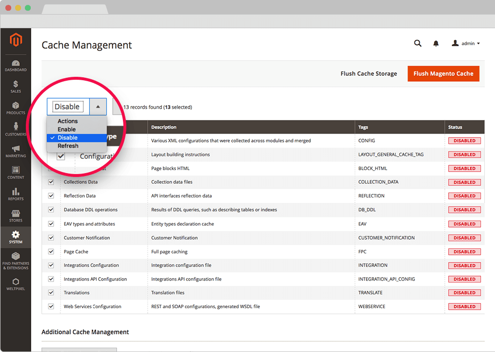

Stack Framework for Magento 2.
User Guide.
Version 1.16.0, January 7, 2026
FRAMEWORK STRUCTURE.
The Stack Framework is installed via Composer, which is the official and only supported installation method. It comes in two editions: Professional and Essential.
Highly Modular Architecture.
The Stack Framework features a modular architecture, allowing you to enable only the extensions you need for your project. All included extensions are designed to work seamlessly together, saving you time debugging compatibility issues. You can have either the Essential version or the Professional version installed, but not both at the same time.
Included Extensions:
- MegaMenu (NavigationLinks)
- Quick View & Ajax Cart (Quickview)
- Rich Snippets & Cards (GoogleCards)
- Lazy Loading Enhanced (LazyLoading)
- Banner Slider OWL Carousel (OwlCarouselSlider)
- SEO Page Title Overwrite (TitleRewrite)
- Smart Product Tabs (SmartProductTabs)
- Instagram Widget (InstagramWidget)
- Full Page Scroll (FullPageScroll)
- Google Tag Manager (GoogleTagManager)
- Google XML Sitemap (Sitemap)
- Quick Cart (QuickCart)
- Product Reviews Widget (ReviewsWidget)
- Multi-Store Multi-Brand (Multistore)
- Custom Thank You Page (ThankYouPage)
- Ajax Catalog & Infinite Scroll (AjaxInfiniteScroll)
- Ajax Search Autocomplete (SearchAutoComplete)
- Layered Navigation (LayeredNavigation)
- Newsletter Popup (Newsletter)
- Advanced Category Sorting (AdvanceCategorySorting)
- Product Labels (ProductLabels)
- Social Login (SocialLogin)
- Advanced Wishlist (AdvancedWishlist)
- Speed Optimization (SpeedOptimization)
- Enhanced Email (Professional Pack only)
- CMS Block Scheduler (Professional Pack only)
- Recently Viewed Bar (Professional Pack only)
- User Profile (Professional Pack only)
- Google Analytics 4 (Professional Pack only)
How to Enable/Disable Modules.
You can enable or disable individual modules via SSH using the following commands:
# Disable a module php bin/magento module:disable WeltPixel_ModuleName # Enable a module php bin/magento module:enable WeltPixel_ModuleName # After enabling/disabling, run: php bin/magento setup:upgrade php bin/magento cache:flush
Modularity advantages.
- Fast and light code - unnecessary extensions from Stack Framework can be disabled, while the remaining ones will remain compatible with each other.
- Easy debugging - each section of the framework can be disabled in order to identify a potential issue.
- Easily replace sections of the framework with other 3rd party functionalities, easy integration without any coding needed. (Example: you can disable WeltPixel MegaMenu and use a 3rd party MegaMenu extension that you prefeer)
PREREQUISITES.
Magento Compatibility.
Before installing Stack Framework on a Magento Store please check the compatibility. Stack Framework is currently compatible with the following Magento Open Source, Commerce & Commerce Cloud, B2B versions:
- 2.0 - 2.0.x
- 2.1 - 2.1.17
- 2.2 - 2.2.10
- 2.3.0 - 2.3.7-p4
- 2.4.0 - 2.4.8-p3
It is highly recommended to install the framework first on a testing server before you install it on a live (production) server.
Note: Make sure to enable Magento Developer Mode before installation - this guide can help: How to set Magento 2 Developer and Production Mode
Magento Commerce Cloud Compatibility.
Stack Framework for Magento 2 and all included extensions are compatible with Magento Commerce Cloud Edition or other read-only environments. Composer installation works seamlessly with Cloud environments.
Browser Compatibility.
Stack Framework for Magento 2 is compatible with most used modern browsers since Jan 1st, 2015 until today. We constantly check browsers compatibility with each release. Older browser versions, or other browsers not mentioned might also be compatible with the included extension.
Compatible Browswers:
- Chrome: starting with version 40
- Firefox: starting with version 35
- Safari: starting with version 7
- Opera: starting with version 23
- IE: starting with version 11
- Edge: starting with version 38
3rd party Extensions Compatibility.
Note 1: It is highly recommended check for extensions installed on your store that offer the same functionality as the ones included in the framework. Extensions included in the framework are designed and tested to work well together, if you have to choose between the same extension from weltpixel or a different vendor, for best performance and compatibility we recommend to go with the Stack Framework bundle.
Note 2: It is recommended to disable other 3rd party extensions before installing the Stack Framework and enable the ones that you still need after the installation, one by one. This way in case of any compatibility issue, you can easily identify and isolate the problem imediatly, by disabling one of the 2 extensions conflicting.
Composer Installation.
Stack Framework is installed via Composer.
Step 1:
- Disable Magento Cache from System > Cache Management > Select All and hit disable and refresh all caches. Note: This step is required even if cache is disabled.
- Set Magento to developer mode before installation.
- Make sure you have Composer installed on your server.

Step 2. Access Composer Configuration
Access your Composer authentication keys from your weltpixel.com account. Log in to weltpixel.com, navigate to My Account > Downloadable Products, and copy your Composer User Name and Composer Access Key.
Step 3. Configure Repository
Add the WeltPixel repository to your Composer configuration. Replace your-id and your-token with your actual Composer User Name and Access Key:
composer config repos.weltpixel composer https://repo.weltpixel.com/ composer config http-basic.repo.weltpixel your-id your-token
Step 4. Install via Composer
Run the following command in your Magento root directory to install the Stack Framework. Choose the edition that matches your license:
For Professional Edition:
composer require weltpixel/m2-weltpixel-framework-pro
For Essential Edition:
composer require weltpixel/m2-weltpixel-framework-essential
Step 5. Complete Installation
Run the following commands to complete the setup:
php bin/magento setup:upgrade php bin/magento setup:di:compile php bin/magento setup:static-content:deploy -f php bin/magento cache:flush
Step 6. Production Mode
If your store was in production mode, switch it back:
php bin/magento deploy:mode:set production
Step 7. Re-enable Caches
Re-enable your Magento caches from System > Cache Management.
Step 8.
Woohoo! Stack Framework is installed and your store should already be looking awesome!
Note: The framework is highly modular. You can disable individual extensions you don't need from Stores > Configuration > WeltPixel or by running php bin/magento module:disable WeltPixel_ModuleName.
Magento Commerce Cloud Installation.
For Magento Commerce Cloud or other read-only environments, you'll need to install the Stack Framework locally and deploy your changes to the cloud environment.
Step 1. Clone Your Repository
Clone your Magento Commerce Cloud repository to your local environment:
git clone your-cloud-repo-url cd your-project-directory
Step 2. Configure Composer Repository
Add the WeltPixel repository to your Composer configuration. Replace your-id and your-token with your actual Composer User Name and Access Key from your weltpixel.com account:
composer config repos.weltpixel composer https://repo.weltpixel.com/ composer config http-basic.repo.weltpixel your-id your-token
Step 3. Install via Composer
Install the Stack Framework using Composer:
For Professional Edition:
composer require weltpixel/m2-weltpixel-framework-pro
For Essential Edition:
composer require weltpixel/m2-weltpixel-framework-essential
Step 4. Commit and Deploy
Commit your changes and push to your Commerce Cloud repository. The environment will automatically deploy the code:
git add composer.json composer.lock git commit -m "Add WeltPixel Stack Framework" git push origin main
Note: Replace main with your target branch name (e.g., staging, production) as appropriate for your deployment workflow.
Step 5.
Woohoo! The Stack Framework is installed and your store should be looking awesome!
Upgrade the framework.
! Important : Before any upgrade it is recommended to backup your Code and Database.
How to update Stack Framework to latest version.
We are constantly releasing product updates containing fixes, new features and compatibility adjustments with latest Magento releases. You can check Stack Framework - Change Log for more details.
Upgrade all extensions at once not selectively.
Make sure to upgrade all included extensions to the latest version, as often when compatibility adjustments are implemented it is necessary to make changes in more than one extension to fix a reported problem. The extensions should be treated as a package and updated at the same version all the time in order to avoid compatibility issues.
Step 1. Update via Composer
Run the following command to update the Stack Framework to the latest version:
composer update
Step 2. Complete Upgrade
Run the setup commands to complete the upgrade:
php bin/magento setup:upgrade php bin/magento setup:di:compile php bin/magento setup:static-content:deploy -f php bin/magento cache:flush
Step 3.
Woohoo! You updated Stack Framework to latest version!
Note: During framework upgrade process, existing sample pages, blocks, sliders will not be overwritten but only new sample elements included in the latest release will be added.
TRANSLATE MODULES.
You can translate a WeltPixel module that is part of the Stack Framework by following next steps:
- 1. Go to app/code/WeltPixel/ModuleYouWantToTranslate/i18n where you should find en_US.csv.
- 2. Copy the content of this file in a new .csv file using magento locale format ( Example: fr_FR.csv, it_IT.csv). The file name must exactly match the locale, and it is case sensitive xx_YY.csv.
- 3. Using a simple editor translate only the second column and the text between “ ”. Make sure all the strings in your .csv file start and end with double quotes, and are separated with comma [,], not semi-colon [;] or any other mark. Example: "Custom Footer","Benutzerdefinierte Fußzeile"
- 4.a. For frontend translations make sure you have set your locale in Stores -> Configuration -> General -> Locale Options -> Locale -> Select your language
- 4.b. For backend translations make sure you have set your users Interface Locale in Account Settings -> Account Information -> Interface Locale -> Select your language
- 5. Refresh all Magento caches and check results
Documentation for MAGENTO 2 EXTENSIONS Included in the Stack Framework.
ALL INCLUDED EXTENSIONS ARE COMPATIBLE WITH EACH OTHER OUT OF THE BOX
Magento modules developed by WeltPixel are compatible with both OPEN SOURCE and COMMERCE and used by thousands of merchants. Extensions were developed, crafted, and tested with the utmost care. Make sure to check them all and discover the great value these extensions can bring to your online business. Modularity allows you to only enable functionality specific for each project, keeping the project light and fast. Click the links for the documentation.
- RESPONSIVE BANNER SLIDER AND OWL CAROUSEL.
- GOOGLE ANALYTICS ENHANCED ECOMMERCE UA GTM TRACKING.
- INSTAGRAM WIDGET ADVANCED.
- ADVANCE PRODUCT QUICK VIEW AND AJAX CART.
- ENHANCED QUICK CART.
- MEGA MENU.
- RICH SNIPPETS & CARDS (SCHEMA.ORG).
- LAZY LOADING ENHANCED.
- EMAIL TEMPLATE EDITOR.
- CMS BLOCK SCHEDULER.
- ENHANCED NEWSLETTER POPUP.
- MULTISELECT AJAX LAYERED NAVIGATION.
- ADVANCED RECENTLY VIEWED PRODUCTS BAR.
- MULTIPLE AJAX WISHLIST AND SHARE EXTENSION.
- GOOGLE ANALYTICS 4.
- AJAX CATALOG AND INFINITE SCROLL.
- AJAX SEARCH AUTOCOMPLETE.
- ENHANCED MULTI-STORE MULTI-BRAND.
- SUCCESS PAGE.
- SEO PAGE TITLE OVERWRITE.
- SMART PRODUCT TABS.
- GOOGLE XML SITEMAP.
- CMS PRODUCT REVIEWS WIDGET.
- FULL PAGE SCROLL.
- ADVANCE CATEGORY SORTING.
- PRODUCT LABELS - NEW, SALE, DISCOUNT STICKERS.
- SOCIAL LOGIN.
- USER PROFILE.
- SPEED OPTIMIZATION & ADVANCED JS BUNDLING.
- POST PURCHASE SUPPORT AUTOMATION.
Troubleshooting.
#1 Licensing the product.
For more details on product licensing follow this detailed article on our support center: License key for local / staging / development environment. Multi-store licensing.
#2 Stack Framework - GUI Installation issues? Try SSH Installation.
If you experienced any issues or limitations with the browser quick GUI installation, see also Stack Framework - Advanced SSH Installation. SSH installation does the same thing as GUI but you are required to issue the commands step by step via Command Line Interface (CLI). Some servers may have high security configurations and may limit the functionality of GUI (browser) Installer.
#3 How to customize css / xml / phtml / js files in Magento 2 - examples [ Tutorial ].
For more details on customizations follow this detailed article on our support center. Just ignore the chapters that refeer to Pearl Theme and check XML / PHTML / JS customization examples. How to customize css / xml / phtml / js files in Magento 2 - examples [ Tutorial ]
# More helpful resources on our Support Knowledge Base and Community Center.
We encourage you to visit our: Support Knowledge Base as it is constantly updated. Here you can find answers on different topics or you can engage and consult with WeltPixel Community users already using our products.

Stack Framework Change Log.
What's new in v.1.16.0 - January 7, 2026
-
New Features:
- Giving back: As a celebration of over 10 years of activity within the Magento 2 ecosystem, and as a way to give back to the community, a number of WeltPixel extensions (both FREE and paid) have officially gone fully Open Source via public Github repositories. Find the full list on Github.
- Introduced composer as the official and singular installation method for all WeltPixel products. Previously, this was only available for the PRO version of the Google Analytics 4 extension, as well as the Marketing Suite Pro.
- Rich Snippets: The extension's generated Structured Data is now compatible with dynamic content inserted via Inline Widgets. Previously, if the product used Inline Widgets, Google would show a parsing error.
- Mega Menu: Fixed a bug which would cause an error on the frontend when the Subcategory Distribution setting contained non-numeric characters.
- Success Page: Fixed a bug that caused the Google Map inserted onto the Success Page via the module's settings to fail to display when the customer address was on two or more lines. Single-line addresses worked fine.
Fixes and improvements:
What's new in v.1.15.9 - October 28, 2025
-
New Features:
- Backend - Added improvements to Magento Admin messaging around Product Updates to ensure visual clarity for users not running the latest product release.
- Backend -Added .ddev.site and .cloudwaysapps.com as accepted development domains. These domains will no longer require additional license keys.
- Quick View - Added the possibility of targeting products by ID for use in the Quick View functionality.
- Advanced Category Sorting - Fixed a bug that prevented sorting options from being renamed via the Magento Admin settings.
- Email Template Editor - Fixed an error that would sometimes be thrown on invoice creation caused by a minor typo resulting in a triple underscore in one of the extension's item templates.
- Google Analytics 4 - Added adjustments to pricing parameter calculation to Begin Checkout and Add Payment Info pixel events to ensure a higher degree of data accuracy.
- Mega Menu - Fixed a bug whereby, in some cases, the Mega Menu Overlay was being rendered regardless of whether or not the design option was enabled.
- Mega Menu - Fixed a bug that sometimes prevented the extension's options related to category distribution per column from functioning properly.
- Owl Carousel Slider - Fixed a bug that would sometimes cause Product Carousels to be loaded larger and then shrink to the correct size, causing CLS issues.
- Owl Carousel Slider - Fixed an error that would show in the Dev Tools Console on the checkout when using the Hyva Compatibility module. PRO only.
- Quick View - Fixed a bug that would prevent the Quick View from displaying properly on Search Results pages.
- Speed Optimization - Fixed a notice related to a minor PHP 8.4 incompatibility that would be displayed in the Magento logs.
Fixes and improvements:
What’s new in v.1.15.7 - September 2, 2025
-
New Features:
- Magento Compatibility - Introduced compatibility with the latest released Magento 2 Security Patches - Magento 2.4.8-p2, Magento 2.4.7-p7, Magento 2.4.6-p12, Magento 2.4.5-p14 & Magento 2.4.4-p15.
- Mega Menu - The extension now features a new Category Grid Widget, which allows for inserting a grid of multiple categories onto CMS Pages or withing CMS Blocks. This is similar to the Subcategories Grid Widget but allows for more granular control over displayed categories.
- Backend - Added additional validations to prevent Magento Admin errors when the Backend extension could not fetch the current server user due to permissions issues.
- Backend - Fixed a CSP issue that would sometimes prevent orders from being created via the Magento Admin.
- Email Template Editor - Fixed a bug that would prevent shipment info from being included in Shipment and Shipment Update emails.
- Advanced Wishlist - Optimized performance by removing excessive extension AJAX calls. Some routes would be called even when the extension wasn't in active use.
- CMS Product Reviews Widget - Fixed a bug that would result in a Structured Data error when displaying reviews in a carousel, a functionality that requires the Owl Carousel extension.
- Google Analytics 4 - Made various code optimizations related to Grand Total and Subtotal calculations in order to increase module customizability.
- Google Analytics 4 - Added various adjustments to ensure best practices are followed for use with Magento Integration Tests.
- Google Analytics 4 - Fixed a bug that would cause Product Short Descriptions to display HTML tags on Category Pages.
- Google XML Sitemap - Added additional validations for error handling related to improperly saved or unsaved Meta Robot options.
- Instagram Widget - Fixed a minor incompatibility with PHP 8.4.
- Mega Menu - Fixed a bug that prevented the upload of images for the Subcategories with Images functionality in the Mega Menu options.
- Owl Carousel Slider - Fixed a bug that prevented Magento Admin settings for the Recently Viewed Products Carousel from being applied.
- Quick View - Fixed an issue that would prevent the Price Change alert notification from displaying within the Quick View popup.
- Rich Snippets - Removed all remaining references to Google+.
Fixes and improvements:
What’s new in v.1.15.3 - June 20, 2025
-
New Features:
- Magento Compatibility - Introduced compatibility with the latest Magento 2.4.8-p1, 2.4.7-p6, 2.4.6-p11 & 2.4.5-p13 Security Patches. Upgrade ASAP to keep your store secure.
- Instagram Widget - Added a new functionality that allows for clearing the Instagram image cache via cron. This feature includes Magento Admin options for setting up a custom cron job.
- Backend - Fixed the Backend functionality that enables users to change the default Magento CSP Restriction Mode via the Magento Admin. This was broken starting with Magento 2.4.7.
- Advanced Wishlist - Optimized performance by removing excessive extension AJAX calls. Some routes would be called even when the extension wasn't in active use.
- CMS Product Reviews Widget - Fixed a bug that would result in a Structured Data error when displaying reviews in a carousel, a functionality that requires the Owl Carousel extension.
- Google Analytics 4 - Made various code optimizations related to Grand Total and Subtotal calculations in order to increase module customizability.
- Instagram Widget - Added performance optimizations related to the extension's first API call.
- Layered Navigation - Fixed a display issue specific to Mozilla Firefox that would result in scrollbars being added when using dropdown Horizontal Filtering.
- Owl Carousel Slider - Fixed a bug that would sometimes cause Structured Data errors on account of a lack of review data being populated for products within carousels.
- Owl Carousel Slider - Fixed an issue that would prevent images loaded via Amazon S3 Buckets from being displayed in product carousels.
- Quick View - Fixed a bug that would cause the Add to Wishlist and Add to Compare buttons to reopen the Quick View window after having been closed.
- Social Login - Fixed an error that would be thrown during compilation via the Command Line on PHP 7.4.
- Speed Optimization - Fixed an error that would be thrown on the checkout after running the Advanced Bundling process by excluding several core files from the bundle generation process.
- Speed Optimization - Added a patch for Magento versions 2.4.8 and up to account for SRI hash regeneration. Failure to add the patch will result in an error on compilation.
Fixes and improvements:
What’s new in v.1.15.0 - April 22, 2025
-
New Features:
- Magento Compatibility - Version 1.15.0 introduces compatibility for the Pearl Theme and all included extensions with the newly released Magento 2.4.8, 2.4.7-p5, 2.4.6-p10, 2.4.5-p12 and 2.4.4-p13 versions.
- PHP Compatibility - This release introduces compatibilty with PHP 8.4, which is now officially compatible with the latest Magento 2.4.8 version.
- Backend - Added magento2.docker as a valid domain for development purposes.
- Backend - Added ddev.site as a valid domain for development purposes.
- Instagram Widget - Added a Cache Flush button in the Magento Admin to allow for clearing image cache to refresh posts.
- Instagram Widget - Added a new functionality that allows for displaying Instagram like count on the pulled posts.
- Speed Optimization - Added a new CLI command to ensure compatibility with Magento 2.4.8 checkout CSP restrictions when using Advanced JS Bundling.
- Backend - Fixed an issue that would prevent certain extension options from correctly applying in Single Store Mode instances.
- Email Template Editor - Adjusted installation script sample data to update various templates to use new X (formerly Twitter) branding.
- Mega Menu - Added minor adjustments to Magento Admin setting descriptions for increased legibility and clarity.
- Mega Menu - Fixed an error that would sometimes be thrown caused by an incorrectly used storeManager variable.
- Mega Menu - Fixed an issue that would sometimes cause categories to be duplicated in breadcrumbs.
- Product Labels - Fixed a CSS display issue apparent when using custom CSS on labels added to Category Page images.
- Recently Viewed Products Bar - Fixed a display issue that would cause the Add to Cart button to be unclickable in the Recently Viewed Products bar.
Fixes and improvements:
What’s new in v.1.14.13 - February 17, 2025
-
New Features:
- Magento Compatibility - Version 1.14.13 introduces compatibility for the Pearl Theme and all included extensions with the newly released Magento 2.4.7-p4, 2.4.6-p9, 2.4.5-p11 and 2.4.4-p12 versions.
- Google Analytics 4 - Extended the module's Exclude Order by Status functionality to apply to server-side Social Pixel addons as well. This also includes a cron that picks up unsent orders and sends them if they move into a status that is not excluded - PRO version only.
- Google Analytics 4 - Added the possibility of sending hashed Enhanced Conversion data to Google Analytics via the Measurement Protocol, in the User Provided Data object - PRO version only.
- Mega Menu - Extended the module's Subcategories with Images functionality to automatically use the category's Custom Link, if it has one configured.
- Owl Carousel Slider - Added support for .webp images in the module's Banner Slider functionality. Custom Banners can now be built with .webp images.
- Backend - Fixed an issue related to licensing which would prevent license keys from being validated various subdomains.
- Google Analytics 4- Fixed a minor Magento Admin option dependency issue that would make the extension's script tag setting visible when disabled.
- Mega Menu - Fixed an issue that would present itself in the Magento Admin and would sometimes cause module settings to display incorrectly.
- Owl Carousel Slider - Added additional validations in the PRO version of the extension to ensure the Mobile Detect extension is installed and enabled.
- Quick View - Fixed an error that would sometimes be thrown on the frontend when the Display in Carousel functionality was enabled.
- Rich Snippets - Added additional adjustments in the module's Magento Admin settings to ensure brand alignment with X (formerly Twitter).
- Social Login - Added additional adjustments in the module's Magento Admin settings to ensure brand alignment with X (formerly Twitter).
Fixes and improvements:
What’s new in v.1.14.11 - January 15, 2025
-
New Features:
- Google Analytics 4 - Extended the module's Measurement Protocol Log functionality to apply to the server-side Social Pixel addons as well. When the functionality is enabled at the Social Pixel level, a log file will be found in the var/log directory containing data about triggered events. This requires the Social Pixel addons to be installed.
- Google Analytics 4 - Added a new setting in the extension's configuration that allows for custom attributes to be added to the extension's script tags. Each attribute needs to be a separate entry, and data-attributes can be used as well. Examples of usage: nodefer, data-javascript-move="false".
- Instagram Widget - The extension now periodically runs a cron job to perform a cleanup in the database image cache, which is required when the Instagram Token is updated and cached images can no longer be accessed.
- Quick View - The extension now features an auto-open functionality, which can be used with URL query parameters. The functionality applies to manually-created Quick View URLs, as well as Quick View Hotspot widgets.
- Smart Product Tabs - Added additional Magento Admin design configuration options for the Smart Product Tabs Label functionality. Label padding can now be adjusted for increased design control.
- General - Removed deprecated Magento 2.2.x code version from extension package.
- Google Analytics 4 - Fixed an issue whereby the extension's tracking scripts would be moved to the bottom of the page in cases in which custom attributes were inserted into the script tag. These scripts should always be exempt from being moved, even when using functionality to defer JS.
- Google Analytics 4- Added an optimization to increase the extension's performance in relation to loading the Order Success Page, after placing a successful order. Loading would be slower in cases in which the store had millions of orders stored in the DB.
- Instagram Widget - Fixed a small display bug that would cause the Instagram Widget to add an extra title div with padding to the HTML, even when the title setting was not in use.
- Layered Navigation - Fixed an issue that would prevent the default Category filter from working properly in cases in which the Magento Root Category was disabled.
- Quick Cart - Fixed a JavaScript error that would sometimes be thrown in the console when the extension was enabled. The error had no apparent impact on functionality.
- Recently Viewed Products Bar - Fixed a display issue which would cause items in the Recently Viewed Bar to improperly overflow to the right of the screen when not using a static block, due to missing CSS properties that were only applied when the block was inserted.
- Smart Product Tabs - Fixed an error that would be thrown on the frontend when using the same title for multiple custom tabs.
Fixes and improvements:
-
New Features:
- Google Analytics 4 - A new setting was added that allows for swapping the load order for the Google Tag Manager initialization script and the dataLayer script. Depending on store setup, speed, and other factors, you may experience more accurate client-side tracking one way or the other.
- Google XML Sitemap - The extension now comes with two new Magento Admin configuration options that allow for setting INDEX/FOLLOW (or NOINDEX/NOFOLLOW) values for Category and Search Pages with Layered Navigation Filters applied. This increases the extension's SEO optimization capabilities.
- Instagram Widget - Updated the Instagram Widget extension to use Instagram's new API. Instagram's Basic Display API is due to be deprecated on December 4th, 2024, meaning all apps that use this API will become obsolete. Our extension is now fully integrated with the new API and will retain all current functionality.
- Product Labels - Added a new Magento Admin option that allows for setting Product Page label configurations to be the same as the ones used for the Category Page, eliminating the need to reconfigure the same settings in cases in which the same label is used for both.
- Social Login - The extension once again benefits from the Instagram Login functionality, which was previously deprecated due to Instagram's API being retired. Instagram has recently released a new API which permits using the login functionality again, which our module now benefits from.
- Newsletter - Added a new Magento Admin configuration option to allow for hiding the Newsletter Trigger Button on mobile devices for better user experience.
- Quick Cart - Added a new option that allows for displaying the Grand Total in the Quick Cart, which is extremely useful when the store has active Cart Price rules, or when a discount code is added via the Quick Cart. When this option is enabled, the discount value and Grand Total is displayed in the Quick Cart, informing the customer how much they save.
- Backend - Added minor Magento Admin adjustments to the module status section for increased clarity and compatibility with server-side Social Pixel addons.
- Advanced Category Sorting - Fixed an error that would, in some cases, be thrown when using various custom attributes as sorting options.
- Advanced Category Sorting - Fixed an error that would be thrown when the sort by position option was disabled in Magento.
- Advanced Wishlist - Added nonces to some of the extension's frontend scripts to maximize compatibility with Magento's latest restrictions.
- Google Analytics 4 - Adjusted the script tag the extension uses to ensure its scripts stay in the head section when Move JS to Bottom functionalities are used. The tag now uses a data-attribute.
- Google Analytics 4 - Added additional validations to account for situations in which the Magento Cookie Restriction mode status can't be read properly.
- Google Analytics 4 - Fixed an error specific to PHP 8.x that would sometimes be thrown when using the extension's Promotion Tracking functionality.
- Google Analytics 4 - Added new whitelisted domains to account for Magento CSP restrictions.
- Google Tag Manager - Adjusted the script tag the extension uses to ensure its scripts stay in the head section when Move JS to Bottom functionalities are used. The tag now uses a data-attribute.
- Layered Navigation - Fixed a bug that would cause Category and Search Page sorting errors when the Ratings filter was enabled and sorting options based on custom attributes were being used.
- Quick View - Added nonces to some of the extension's frontend scripts to maximize compatibility with Magento's latest restrictions.
- Speed Optimization - Added nonces to some of the extension's frontend scripts to maximize compatibility with Magento's latest restrictions.
Fixes and improvements:
-
New Features:
- Introduced compatibility with the latest Magento 2.4.7-p3, 2.4.6-p8, 2.4.5-p10 and 2.4.4-p11 versions, which come with critical security adjustments for the platform. Magento 2 merchants are urged to upgrade to the latest patches ASAP.
- Layered Navigation - Added a new Magento Admin setting that allows for displaying the default Category Filter as opened/closed by default.
- Newsletter - Added a new Magento Admin configuration option to allow for hiding the Newsletter Trigger Button on mobile devices for better user experience.
- Quick Cart - Added a new option that allows for displaying the Grand Total in the Quick Cart, which is extremely useful when the store has active Cart Price rules, or when a discount code is added via the Quick Cart. When this option is enabled, the discount value and Grand Total is displayed in the Quick Cart, informing the customer how much they save.
- Backend - Added various code updates for increased security around the licensing functionality as well as the Help Center and WeltPixel Developer Magento Admin sections.
- Ajax Infinite Scroll - Fixed an error that would sometimes be thrown in the Magento logs when the extension couldn't properly pick up the page URL for use with the canonical functionality.
- Email Template Editor - Added minor design adjustments to the extension's default Email Footer template for better social icon alignment.
- Mega Menu - Fixed a display bug that would sometimes result in HTML tags being shown on the frontend when using the Subcategories with Images layout type in conjunction with the Magento Pagebuilder.
- Mega Menu - Fixed a display bug that would cause the dropdown menu content to overlap with content added to pages via the Magento Pagebuilder.
- Product Labels - Fixed an issue that would sometimes result in labels generated by the extension being shown inconsistently via Stock Status conditions when using the Magento Multi Source Inventory functionality.
- Social Login - Added a new patch for the extension, found in the patches folder, which fixes a compilation error that is thrown when the extension is installed on a Magento instance that does not have the core ReCaptcha modules enabled. The patch is not required if the modules are present and enabled on the environment.
Fixes and improvements:
-
New Features:
- Introduced compatibility with the latest Magento 2.4.7-p2, 2.4.6-p7, 2.4.5-p9 and 2.4.4-p10 versions, which come with critical security adjustments for the platform. Magento 2 merchants are urged to upgrade to the latest patches ASAP.
- CMS Product Reviews Widget - The module now comes with a dedicated Magento Admin page, which displays information about the current version, latest version, as well as allows for submitting new feature requests.
- Layered Navigation - Introduced compatibility with Elastic Search 8. The extension was previously not compatible (or required to be) as Magento no longer comes bundled with Elastic Search. Compatibility was added for users who manually install Elastic Search 8 via composer.
- SEO Page Title Overwrite - The module now comes with a dedicated Magento Admin page, which displays information about the current version, latest version, as well as allows for submitting new feature requests.
- Smart Product Tabs - Added a new Tab Label functionality, which allows you to add fully-customizable labels to your Custom Product Page Tabs. You can choose a custom text on the label, or select an attribute from which to pull and display the value on the frontend.
- Various modules (Google Tag Manager, Google Automated Discounts, Design Elements) - Tagged frontend and admin inline scripts with nonces to account for recent Magento CSP requirements. In most cases, CSP reports would not impact functionality, but a proactive approach was taken to ensure the module is future-proof.
- Various modules (Lazy Loading, Owl Carousel & Banner Slider) - Added a code optimization that aligns the extended ImageFactory.php file with the core Magento equivalent to prevent potential errors.
- Advanced Wishlist - Fixed a small conflict with our Google Analytics 4 extension, which would prevent the Add to Wishlist event from triggering when the Ajax Wishlist & Share extension was enabled.
- Ajax Search Autocomplete - Fixed an error related to PHP 8 that would be thrown in certain cases when initiating a search on the frontend. The error would only show up in the Magento logs, but no results would be shown on the frontend.
- Google XML Sitemap - Fixed an error that would sometimes be thrown on Product and Category Pages when using the extension's Meta Tags functionality. This was later discovered to be caused by a conflict, but the adjustment remains as a way to ensure the particular error is bypassed for UX purposes.
- Mega Menu - Fixed a frontend display issue that would occur on the Boxed and Sectioned display modes which would result in the navigation menu items being pushed out of position when inserting a Custom HTML block in the menu.
Fixes and improvements:
-
New Features:
- Introduced compatibility with the latest Magento 2.4.7-p1, 2.4.6-p6, 2.4.5-p8, 2.4.4-p9 versions, which come with critical security adjustments for the platform. Magento 2 merchants are urged to upgrade to the latest patches ASAP.
- Added a new section in the Magento Admin that checks to make sure the latest product version is installed and notifies in case an update is available, as well as a button that allows for new features to be requested.
- Google Analytics 4 - Added a new backend configuration option that is applicable when the Item Variant is enabled, which allows for choosing between sending the Product SKU as the variant, or a dynamically generated string consisting of the product configurations.
- Mega Menu - Added a new configuration option that allows you to set a custom text to be displayed in the Menu instead of the Category Name. This allows for keeping a longer Category Name for SEO purposes.
- Quick Cart - Added a new design option for the Quantity Input on the Cart Page that allows for transforming the default Quantity Input into either Arrows or Plus/Minus icons.
- Quick View & Ajax Cart - The extension now allows the Quick View product URL to be structured with the product's SKU as well. Previously, only the Product ID was accepted in the Quickview URL.
- Google Tag Manager - Added a deprecation notice for the extension in the Magento Admin configuration section. We recommend upgrading to the Google Analytics 4 extension ASAP to keep tracking eCommerce data.
- Newsletter - Added minor configuration option description changes to reflect shift from the deprecated Google Tag Manager extension to the Google Analytics 4 integration.
- Owl Carousel & Banner Slider - Added minor configuration option description changes to reflect shift from the deprecated Google Tag Manager extension to the Google Analytics 4 integration.
- Owl Carousel & Banner Slider - Fixed a bug that would, in certain cases, result in an error being thrown when trying to save a banner in the Magento Admin.
- Quick Cart - Fixed a bug related to the Free Shipping integration whereby the extension would not properly calculate the Free Shipping threshold on different currency options.
- Recently Viewed Products Bar - Fixed a minor display issue that would result in text and other content overflowing downwards off the screen on extremely high resolutions (2k and up).
- Google Analytics 4 - Fixed a bug that would cause the extension's script initialization to break because of incorrect characters when adding custom attributes to the script tag in the extension's backend configuration.
- Google Analytics 4 - Added a technical improvement to the extension's Item Name fetching process for View Item List and View Item events which allows for enhanced compatibility with various Magento customizations.
- Google Analytics 4 - Added minor improvements to script nonce generation in order to ensure the extension's scripts properly pass Magento CSP restrictions.
- Google Analytics 4 - Added an adjustment to the extension which boosts compatibility with 3rd party extensions that send/modify HTTP headers.
- Google Analytics 4 - Added improvements to discount parameter calculations for products with tax included in the price.
Fixes and improvements:
-
New Features:
- The Stack Framework Professional Pack now includes the standard version of the Google Analytics 4 extension in order to replace the deprecated Universal Analytics module.
- The Stack Framework & all included extensions are now confirmed for compatibility with the latest Magento 2.4.7 release, as well as newly released 2.4.6-p5, 2.4.5-p7 & 2.4.4-p8 Security Patches.
- The Stack Framework & all included extensions are now confirmed for compatibility with PHP 8.3 on the Magento 2.4.7 release. PHP 8.2 is also supported for this Magento version.
- Advanced Wishlist - Added a new configuration option that allows for selecting whether an item should stay in the wishlist after being added to the cart.
- Google Analytics 4 - Added an option that allows for including a new event in the dataLayer called ads_purchase which can be used as a trigger for the Google Ads Conversion Tracking Tag, used in cases in which the tag misses timing.
- Instagram Widget - The extension can now fetch posts from Instagram that include multiple images. Previously, this post type was ignored and no images were displayed.
- Mega Menu - Added a new Magento Admin configuration option that allows for setting a custom Alt Text value for Subcategory Images, for increased SEO performance.
- Mega Menu - Added a new Magento Admin configuration option that can be used to display the Category Description for the Subcategories with Images functionality.
- Mega Menu - The extension now features a new Magento Widget that can be used to display the Subcategories grid on other page types, such as CMS Pages.
- Owl Carousel & Banner Slider - Improved the extension's SEO capabilities by ensuring all Banners assigned to Sliders have an Alt Text attribute. If one is not specified, the Banner Title is used.
- Backend - Added security improvements to the Backend module's license verification process.
- Ajax Catalog & Infinite Scroll - Added minor adjustments to "next" and "previous" page link structure for improved technical on-page SEO.
- Ajax Search Autocomplete - Fixed a bug related to PHP 8 that would, in certain cases, depending on the Product Description, result in an error on the frontend when initiating a search.
- Email Template Editor - Updated Social Media Platform branding for Social Icons used in default Email Templates, including the new X (formerly Twitter) icon.
- Google Analytics 4 - Fixed a bug that would sometimes cause an error to be displayed when modifying item quantity in the cart from a small to a large number.
- Google Analytics 4 - Fixed a bug that would sometimes result in item variants being duplicated in the Add to Cart & Remove from Cart event dataLayer.
- Google Analytics 4 - Added adjustments to increase compatibility with custom script insertion/optimization methods, particularly Rocket Javascript.
- Google Analytics 4 - Added/adjusted Magento Admin configuration option descriptions for improved clarity.
- Google XML Sitemap - Fixed an error that would sometimes be thrown on the frontend when enabling and using the extension's INDEX/FOLLOW functionality. This would only be the case on CMS pages.
- Instagram Widget - Fixed an issue that prevented the extension's Post Limit settings from fetching more than 25 images from Instagram. The extension now includes pagination.
- Layered Navigation - Fixed an issue whereby the extension's Slide In and Slide Down design modes would not function correctly when the Ajax feature was disabled.
- Owl Carousel & Banner Slider - Fixed an issue specific to the Mozilla Firefox browser whereby window resizes would cause display issues, particularly with spacing under Product Carousels.
- Product Labels - Fixed a bug that would cause labels to be duplicated in cases in which a page included multiple iterations of the same product. This was most apparent when using Product List widgets.
- Product Labels - Fixed an issue that would prevent labels created by the extension with stock-based conditions from displaying when using Magento's MSI functionality.
- Rich Snippets - Fixed an error that would sometimes be thrown on the frontend in cases in which a canonical link was present in the head section of the store and was unparsable by Facebook Open Graph.
- Rich Snippets - Fixed a schema-related issue related to backorders whereby the extension would send an incorrect "In Stock" availability value. This also applies to Facebook Open Graph.
- Social Login - Fixed an error that would be thrown on the frontend when trying to create an account via the extension's popup functionality. This would also prevent the account from being created.
- Social Login - Fixed an issue that would sometimes result in an error that prevented a successful login due to a premature expiration of the password token.
- Social Login - Fixed an error that would sometimes be thrown on the frontend when using the "Login as Customer" functionality in the Magento Admin section.
- User Profile - Updated a deprecated/incorrect jQuery function that was used in the extension's functionality related to Ajax.
Fixes and improvements:
-
New Features:
- Newsletter - Updated Social Icons and Logos used in the Newsletter Popup extension to reflect the new Twitter/X Branding changes.
- Owl Carousel & Banner Slider - Updated the Conditions-Based Owl Carousel type to allow the use of the Stock Status (Quantity) attribute as a display condition.
- Product Labels - Added a new functionality that allows for duplicating an existing Product Label, with all the current settings/configuration options, via the Product Labels Grid.
- Quick Cart - Updated the Quick Cart Coupon Code functionality to ensure there is no longer a page refresh when applying a discount code via the Quick Cart, enhancing the UX.
- Fixed an error that would be thrown in the WeltPixel -> Extensions Version admin section when a module's composer.json file was missing the version node.
- Added various optimizations for ADA compliance to ensure a high degree of compatibility and increased scores across testing platforms.
- Ajax Catalog & Infinite Scroll - Added various optimizations for ADA compliance to ensure a high degree of compatibility and increased scores across testing platforms.
- Ajax Catalog & Infinite Scroll - Added minor adjustments for increased compatibility with Varnish Caching in conjunction with the Google Analytics 4 extension.
- Ajax Search Autocomplete - Fixed a bug that would cause HTML tags used in Product Description and Short Description fields to show up as unescaped plain text in the Search Results on the frontend.
- Google Tag Manager - Added various optimizations for ADA compliance to ensure a high degree of compatibility and increased scores across testing platforms.
- Layered Navigation - Added various optimizations for ADA compliance to ensure a high degree of compatibility and increased scores across testing platforms.
- Layered Navigation - Added minor adjustments for increased compatibility with Varnish Caching in conjunction with the Google Analytics 4 extension.
- Mega Menu - Fixed a couple of minor CSS/styling issues that would sometimes cause the Mega Menu to break on certain breakpoint resolutions, usually around 768 pixels.
- Newsletter Popup - Added minor adjustments for increased compatibility with Varnish Caching in conjunction with the Google Analytics 4 extension.
- Owl Carousel & Banner Slider - Added various optimizations for ADA compliance to ensure a high degree of compatibility and increased scores across testing platforms.
- Product Labels - Added various optimizations for ADA compliance to ensure a high degree of compatibility and increased scores across testing platforms.
- Quick Cart - Added various optimizations for ADA compliance to ensure a high degree of compatibility and increased scores across testing platforms.
- Quick View & Ajax Cart - Added various optimizations for ADA compliance to ensure a high degree of compatibility and increased scores across testing platforms.
- Recently Viewed Products Bar - Added various optimizations for ADA compliance to ensure a high degree of compatibility and increased scores across testing platforms.
- Rich Snippets - Adjusted Product structured data to ensure backorder products with a quantity of 0 always display the correct stock status. Previously, in some cases, this would show as In Stock.
- Rich Snippets - Adjusted Home Page structured data to ensure the website name is also included. The value displayed is taken from the Magento Admin website details configuration.
- Rich Snippets - Fixed an error that would sometimes be thrown in cases in which the Rich Snippets extension would not have access to the website URL in order to parse it.
- Rich Snippets - Fixed an error that would be displayed in Google Search Console with Social Login markups enabled.
- Social Login - Fixed a bug that would cause the Social Login popup window to close prematurely in cases in which errors caused by incorrect app configurations were thrown.
- Social Login - Added various optimizations for ADA compliance to ensure a high degree of compatibility and increased scores across testing platforms.
- Social Login - Added minor code adjustments for increased compatibility with 3rd party extensions/functionalities.
Fixes and improvements:
-
New Features:
- Confirmed compatibility with the newly released Magento 2.4.6-p3, 2.4.5-p5, and 2.4.4-p6 Security Patches for the Pearl Theme, Stack Framework & all individual extensions.
- Ajax Catalog & Infinite Scroll - Added a new functionality that allows you to display a Progress Bar which indicates the number of products that have already been loaded, as well as the total number of products available in the Category.
- Mega Menu - Added optimizations for ADA Accessibility which address underlying navigation accessibility problems present natively in the Magento 2 core, and which would be flagged by Google Page Speed Insights.
- Social Login - Login with Twitter redesign. The Twitter login button has been updated and now uses the new "X" branding, as well as colors. Magento Admin settings have also been updated to reflect new branding and API labels.
- Backend - Optimized the license verification process for increased Magento Admin performance, as well as to account for licensing server downtimes.
- Backend - Fixed an issue that would sometimes result in an error being thrown when using older PHP versions, such as PHP 7.4.
- CMS Block Scheduler - Fixed an error related to PHP 8 that was thrown in the Magento Admin section when editing a CMS Block using the Block Scheduler functionality.
- Email Template Editor - Fixed an issue that would prevent the correct store URL from being used in the Email Template Menu section when sending emails from a store view/website other than the default one.
- Email Template Editor - Fixed an error that would be thrown upon attempting to change/reset the password of a customer account. This would only occur when the user was logged in.
- Email Template Editor - Adjusted the Order Confirmation email to fetch the Small Image of the products included in the order. Previously, the Thumbnail image would be used.
- Email Template Editor - Fixed an error that would sometimes show in email content within the email client (such as Gmail) in certain cases when using custom inline CSS.
- Full Page Scroll - Fixed an error related to PHP 8 that would sometimes be thrown on the frontend when attempting to implement the Full Page Scroll functionality.
- Google XML Sitemap - Fixed an error related to PHP 8 that would sometimes be thrown upon attempting to generate an XML Sitemap via the Magento Admin section with the extension enabled.
- Layered Navigation - Fixed a bug that would cause the Category Page layout to break on Category Pages with special characters in the name, when using the extension in conjunction with the Google Analytics 4 extension.
- Layered Navigation - Adjusted the Horizontal Filter design to account for filter dropdowns with a large number of options. Previously, in some cases, the dropdown would extend beyond the height of the screen.
- Layered Navigation - Fixed an error that would sometimes be thrown upon loading Category Pages. This would happen when the extension was not able to determine an attribute's ID.
- Owl Carousel & Banner Slider - Fixed an issue that would result in images being displayed with incorrect width values in Recently Viewed Products Carousels. Other carousel types were unaffected.
- Product Labels - Fixed an error that would sometimes be thrown when using labels on products with a price of 0 and/or similar combinations of pricing and special pricing.
- Product Labels - Fixed an issue that prevented the description of the Label Text Magento Admin setting from being displayed, which explains the usage of variables.
- Quick Cart - Fixed an error related to PHP 8 that would sometimes be thrown on the frontend when attempting to display a Free Shipping Message via the extension's settings.
- Quick View & Ajax Add to Cart Popup - Fixed a bug that would sometimes result in an infinite spinner being displayed in the Mini Cart after adding a product to the cart via the Quick View popup.
- Rich Snippets - Fixed an issue that would, in certain cases, result in the duplication of the product data in the Rich Snippets structured data, which could be verified with structured data Testing Tools such as Google's.
- Rich Snippets - Fixed a bug that would sometimes result in the extension overriding the product's Canonical URL with a shortened version, which would then be used in the Rich Snippets structured data.
- Smart Product Tabs - Fixed a bug that would prevent some of the extension's settings from being applied at the Store View level, even when the "Use Default" checkbox was unchecked.
Fixes and improvements:
-
New Features:
- Magento Compatibility - Confirmed compatibility with Magento 2.4.6-p1, 2.4.5-p3 and 2.4.4-p4 for the Pearl Theme, Stack Framework and all individual extensions.
- Licensing - Added .localdev as a universally accepted licensing domain.
- Google XML Sitemap - Added the ability to choose whether to use the Canonical URL generated by the extension as the Canonical URL for the XML Sitemap. This applies to Products, Categories and CMS Pages.
- Google XML Sitemap - The extension now automatically adds the Magento Base URL to the Canonical URL configured via the settings for Products, Categories and CMS Pages.
- Layered Navigation - Added compatibility with Open Search. While Magento Open Source will continue to function with Elasticsearch, Magento Cloud now requires Open Search as the default Search Engine.
- Backend - Fixed an error related to PHP 8.2 that would show when accessing the WeltPixel Debugger.
- Advanced Category Sorting - Fixed a bug that would cause sorting options on the frontend to be displayed incorrectly when not all sorting options were enabled for a specific category.
- Ajax Catalog & Infinite Scroll - Fixed a bug that would cause an incorrect addition of tags to Category Pages which were configured to display as Static Blocks with products assigned.
- Email Template Editor - Added background and text color adjustments to ensure default values don't overlap with Magento Admin settings and cause text to become unreadable.
- Email Template Editor - Fixed a bug that prevented Order Details from showing when sending a Test Email via the extension's Test Email feature.
- Email Template Editor - Template Variable Cleanup. Removed unnecessary and unused template variables.
- Email Template Editor - Fixed a translation issue that affected the Invoice Email Template.
- Google XML Sitemap - Fixed an issue that would cause two Canonical URL tags to be added when using the Ajax Infinite Scroll extension's Canonical URL feature as well. The URL added by the Infinite Scroll module now takes precedence.
- Google XML Sitemap - Fixed a bug that caused Sitemap URLs to be generated incorrectly when Magento's Use Categories Path for Product URLs setting was enabled.
- Instagram Widget - Fixed an issue that would cause an incorrect table prefix to be added to the Instagram Widget's database tables if a prefix was defined in the Magento configuration.
- Layered Navigation - Fixed a bug that would sometimes cause an error related to the Multi Select functionality to be displayed on the Category Page.
- Layered Navigation - Fixed a small bug that would cause the Product Count on the Category Page to disappear when a filter was applied.
- Layered Navigation - Fixed an issue that would prevent the stars from displaying in the Ratings Filter.
- Mega Menu - Fixed a bug that would cause the Mega Menu to render incorrectly some mobile resolutions. This would result in the content overflowing outside of the screen.
- Product Labels - Fixed an issue that would cause the indexation of Product Label-specific URLs.
- Quick View - Fixed an issue that would sometimes prevent products from being added to cart when using the Quick View Popup functionality.
- Rich Snippets - Fixed a couple of minor itemprop errors that would be displayed when running tests via the Markup Validation Service.
- Social Login - Fixed a bug that would result in 404 errors related to various missing image/loader files.
- Success Page - Fixed an issue that prevented the Success Page from generating links for Bundle Products.
- User Profile - Fixed an issue that would cause an incorrect table prefix to be added to the User Profile's database tables if a prefix was defined in the Magento configuration.
Fixes and improvements:
-
New Features:
- Magento Compatibility - Confirmed compatibility for the Stack Framework and all included extensions with the latest Magento 2.4.6 and 2.4.5-p2 versions.
- Ajax Search Autocomplete - Added minor HTML/CSS changes to optimize and improve usability and accessibility.
- Owl Carousel Slider - Added configuration options to control carousel image size when inserting an Owl Carousel Widget via the Magento Admin.
- Backend - Fixed an error that would sometimes be thrown in the WeltPixel Debugger, depending on various server permissions.
- Various modules - Fixed a bug that would occasionally prevent certain frontend notification messages from being displayed.
- Google Tag Manager - Fixed an error that would appear when the default Magento Reviews functionality was disabled.
- Owl Carousel & Banner Slider - Fixed a bug that would result in an incorrect redirect when adding a product to the cart from a Cross-Sell Carousel.
- Quick View - Fixed a bug that would cause the Quick View button to be displayed incorrectly on certain Category Page configurations.
- Quick View - Fixed an error that would be thrown in some cases when displaying the Product Price in the Quick View window.
- Social Login - Fixed a bug that would cause the Show Password checkbox to stop working when the Social Login functionality was enabled.
- Speed Optimization - Fixed an issue that would result in a console error being displayed after implementing the Advanced JS Bundling process. This was specific to Magento 2.4.4 and 2.4.5.
- Success Page - Fixed a small dependency issue when the extension was used with the Pearl Theme.
Fixes and improvements:
-
New Features:
- Magento Compatibility - Confirmed compatibility for the Stack Framework and all included extensions with the latest Magento 2.4.5-p1 and 2.4.4-p2 versions.
- Ajax Infinite Scroll - Added compatibility with the Google Analytics 4 PRO for sending Item List Views via Measurement Protocol.
- Layered Navigation - Added compatibility with the Google Analytics 4 PRO for sending Item List Views via Measurement Protocol.
- Mega Menu - Added an option to hide Subcategory Titles from the Mega Menu - this is useful when you want to display your Subcategories as images.
- Mega Menu - Added options for various Subcategory padding values, depending on the level and type of element you'd like to apply the values to.
- Smart Product Tabs - Added tab ID generation to match the Smart Product Tab name configured in the Magento Admin - this results in increased SEO and allows for better targeting when generating links to specific tabs.
- Mobile Detect - General code cleanup related to PHP warnings.
- Email Template Editor - Fixed an error related to PHP 8.1 that was thrown when editing an Email Template via the Magento Admin.
- Google Tag Manager - Fixed an issue that caused certain dataLayer variables to be marked as "Other" when using Magento's Move JS to Bottom functionality in conjunction with Full Page Caching.
- Google Tag Manager - Added various adjustments to Magento Admin setting text for increased clarity.
- Layered Navigation - Applied adjustments for increased compatibility with 3rd party Shop By Brand extensions.
- Newsletter - Fixed a bug that would, in some cases, result in an error related to a Newsletter Javascript file when running a bundling command via our Speed Optimization extension.
- Product Labels - Fixed an issue that would sometimes cause the Product Label position to reset to top-left when saving the configuration in the Magento Admin.
- Product Labels - Fixed an error related to PHP 8.1 that was thrown when trying to create a new Product Label on Magento Commerce installations.
- Quick Cart - Fixed an issue that prevented the Related Products Carousel from displaying correctly in the Quick Cart.
- Quick Cart - Fixed an issue that prevented Product Prices from showing up in the Quick Cart Related Products Carousel.
- Quick View - Fixed an error related to PHP 8.1 that was thrown when adding Quick View Messages on Magento Commerce.
- Quick View - Fixed a bug that prevented tax from being applied correctly to prices in the Quick View Popup.
- Rich Snippets - Fixed an error related to PHP 8.1 that would sometimes be thrown on Configurable Product Pages.
- Smart Product Tabs - Fixed a bug that would result in Customer Groups being displayed incorrectly in the module's Magento Admin settings when certain Customer Groups were deleted.
- Smart Product Tabs - Fixed an error related to PHP 8.1 that was thrown when creating a new Smart Product Tab via the Grid functionality on Magento Commerce.
- Smart Product Tabs - Fixed an issue that would sometimes prevent created tabs from showing on Product Pages when specific conditions were used.
- Success Page - Fixed an issue which sometimes caused prices to be displayed without tax on the Success Page, in the Order Items section.
Fixes and improvements:
-
New Features:
- Magento Compatibility - Confirmed compatibility for the Stack Framework and all included extensions with the latest Magento 2.4.5 and 2.4.4-p1 versions.
- Magento Compatibility - Updated installation/upgrade scripts to use data patches.
- Google Tag Manager - Extended the Child/Parent SKU/ID functionality to apply to Add to Cart and Remove from Cart events as well.
- Quick View - The Add to Cart Confirmation Popup functionality now works on CMS Pages as well - the popup will display when adding products to the cart from Product Carousels or Product Grids.
- CMS Block Scheduler - Fixed a error related to PHP 8.1 that was thrown on the frontend when using the Customer Group functionality.
- Email Template Editor - Fixed a bug that prevented the item section from showing up in Email Templates on certain Magento versions.
- Email Template Editor - Fixed an error that was thrown when sending or previewing the Newsletter Subscribe Email Template.
- Email Template Editor - Fixed a Google Markup error related to an incorrect store frontend URL.
- Google Tag Manager - Fixed an error related to PHP 8.1 that occurred when refreshing the Success Page.
- Layered Navigation - Fixed an issue that caused the browser back button to return to the previous page when Ajax Filters were applied, as opposed to removing the applied filter.
- Layered Navigation - Fixed a bug that prevented the Price Slider from functioning on Magento 2.4.4.
- Mega Menu - Fixed an error related to PHP 8.1 that prevented accessing a Category's settings in the Magento Admin - this only affected Magento Commerce.
- Mega Menu - Fixed an issue that prevented Font Color options from applying to top-level Categories.
- Layered Navigation - Applied optimizations to the filtering functionality to increase compatibility with 3rd party Brand/Shop by Brand modules.
- Mega Menu - Fixed a bug that would cause the link on a category in the breadcrumbs to be disabled when using the Custom Link Mega Menu # option within the Category settings.
- Mega Menu - Fixed a bug that prevented certain Mega Menu Design Settings from applying to the Full Width Display Mode.
- Mega Menu - Fixed a bug that prevented Level 1 Category settings from applying if there were no subcategories present.
- Newsletter Popup - Fixed an issue that prevented the Newsletter from automatically appearing when it was configured to do so.
- Owl Carousel Slider - Fixed a bug related to PHP 8.1 that prevented sliders configurations from being saved in the Magento Admin section.
- Owl Carousel Slider - Added minor code enhancements to keep in line with Magento Best Practices.
- Product Labels - Fixed an error related to PHP 8.1 that was thrown in some cases when creating a Product Label via the Magento Admin.
- Product Labels - Fixed a bug that prevented the Product Label Position Grid from showing in the Label Configuration section.
- Quick View - Fixed a bug that prevented the Continue Shopping button on the Add to Cart Popup from functioning correctly.
- Rich Snippets - Fixed an error that would sometimes be thrown on the Category Page when using a custom attribute in the Brand configuration option, along with a Meta Description on the Product Page.
- Rich Snippets - Fixed a bug that resulted in an error on the Product Page when the product had no Description.
- Smart Product Tabs - Fixed an issue that would sometimes prevent Customer Group names from displaying correctly in the Smart Product Tab Grid.
- Social Login - Fixed an error related to PHP 8.1 that was thrown upon trying to create and account/log in via the Google Login.
Fixes and improvements:
-
New Features:
- Magento Compatibility - Confirmed compatibility for the Stack Framework and all included extensions with the latest Magento 2.4.5 and 2.3.7-p3 versions.
- PHP Compatibility - Confirmed compatibility for the Stack Framework and all included extensions with PHP 8.1.
- Product Page - Added an option to have Accordion Tabs on Product Pages closed by default. Previously, one of the Accordion Tabs were opened by default on page load.
- Google Analytics 4- Added the possibility of including custom Success Page URLs with an asterisks to account for dynamic Success Page URLs and increase compatibility with 3rd party Payment Methods.
- Google Tag Manager - Added the possibility of including custom Success Page URLs with an asterisks to account for dynamic Success Page URLs and increase compatibility with 3rd party Payment Methods.
- Layered Navigation - Moved all the WeltPixel Layered Navigation options under their own tab in the Admin -> Stores -> Attributes -> Product section, at the attribute configuration level.
- Layered Navigation - Added a new option in the Magento Admin that allows for choosing whether the page should scroll back to the top after filtering via the Ajax functionality.
- Layered Navigation - Added a new option in the Magento Admin that allows for keeping an attribute fully opened in the sidebar after filtering with Multiple Select.
- Product Labels - Discounts are now displayed in the Cart if coupon codes are used.
- Theme frontend - Fixed various styling issues for Braintree icons on the Checkout Page.
- Custom Header - Fixed an issue whereby the Search Icon would not reposition to its original location after resizing the page.
- Product Page - Added adjustments to prevent Product Page Tab settings/styling from applying on mobile. Settings are now desktop-only as intended.
- Product Page - Adjusted Size Chart Condition setting to ensure it's set to True by default when the option is enabled.
- Product Page - Fixed an issue that would sometimes cause the Next/Prev Products tooltip to overlap with the header.
- Backend - Fixed an incorrect licensing message on B2B Magento Enterprise instances which would display when an invalid license was entered.
- Advanced Category Sorting - Fixed an error that occurred when manually inputting invalid sorting parameters via the URL.
- Ajax Search Autocomplete - Fixed a bug that would sometimes result in categories from different websites within the Magento installation being displayed in the Search Results.
- Email Template Editor - Fixed a styling issue that prevented the menu from loading horizontally in email templates when using the Outlook client for Windows. Other versions and clients were unaffected.
- Email Template Editor - Fixed an error that prevented Magento Bundle Products from appearing in email templates.
- Google Analytics 4- Fixed a bug that, in some cases, caused the default Magento pagination to break on Category Pages when the module was enabled.
- Google Analytics 4 - Fixed an error that occurred when the Impression Chunk Size setting in the Magento Admin was set to 0.
- Google Analytics 4 - Ensured Price and Quantity values are passed as integers via the dataLayer to conform to Google recommendations.
- Google Analytics 4 - Initiated a clear of the dataLayer eCommerce object before a push event to conform with Google recommendations.
- Google Analytics 4 - Added a "value" parameter to the dataLayer for Checkout and View Cart events.
- Google Analytics 4 - Code cleanup: Removed certain unused jQuery/UI elements from the Magento Admin.
- Google Tag Manager - Fixed an error that occurred when the Impression Chunk Size setting in the Magento Admin was set to 0.
- Google Tag Manager - Removed the deprecated Login with Google functionality from the Magento Admin settings.
- Google Tag Manager - Ensured Price and Quantity values are passed as integers via the dataLayer to conform to Google recommendations.
- Google Tag Manager - Initiated a clear of the dataLayer eCommerce object before a push event to conform with Google recommendations.
- Google Tag Manager - Code cleanup: Removed certain unused jQuery/UI elements from the Magento Admin.
- Instagram Widget - Fixed an issue the caused certain parts of the extension settings to be accessible without a license key.
- Layered Navigation - Applied various optimizations to the extension's DB operations which sometimes caused sluggish performance on very large product catalogs.
- Layered Navigation - Applied optimizations to the filtering functionality to increase compatibility with 3rd party Brand/Shop by Brand modules.
- Mega Menu - Fixed a bug that would cause the link on a category in the breadcrumbs to be disabled when using the Custom Link Mega Menu # option within the Category settings.
- Mega Menu - Fixed a bug that prevented certain Mega Menu Design Settings from applying to the Full Width Display Mode.
- Mega Menu - Fixed a bug that prevented Level 1 Category settings from applying if there were no subcategories present.
- Owl Carousel & Slider - Fixed a bug that caused all banners within a Slider to disappear unless there was an Image type banner present in the Slider.
- Quick Cart - Added the backorder notification to the Quick Cart as well - this was previously only displayed on the Cart Page.
- Quick Cart - Added updated translations.
- Quick View - Fixed a bug that prevented the Quick View Popup from displaying when using the Owl Carousel Free extension and displaying a carousel in the Popup.
- Smart Product Tabs - Fixed a bug that prevented content from tabs built with the Smart Product Tab Grid functionality from being edited with the Magento Page Builder.
- Social Login - Performed various code cleanups and removed unused functions.
- User Profile - Added improvements to Date Picker styling.
Fixes and improvements:
What’s new in v.1.10.17 - October 22, 2021
-
New Features:
- Magento Compatibility - Confirmed compatibility for the Stack Framework and all included extensions with the newly released Magento 2.4.3-p1 and 2.3.7-p2 versions.
- Owl Carousel and Banner Slider - Added a new sorting option for Recently Viewed Product Carousels that allow for sorting items in the order they were seen.
- Owl Carousel and Banner Slider - Added new options to control banner transtion speed when using the AutoPlay functionality.
- Owl Carousel and Banner Slider - Added options to control radius for Banner Slider Next/Prev buttons.
- Product Labels - Added a new functionality that allows for dynamic label construction with variables. Show your customers discount percentages for products with Special Prices or implement the FOMO effect by making it obvious when discounts end. Different combinations are possible and result in conversions going up.
- Ajax Infinite Scroll - Fixed a bug that that caused an inability to load a product collection when accessing a Product Page and clicking the back button in a browser after having initially filtered products using an attribute ending in the letter "p". This only happened in conjunction with the Layered Navigation extension.
- Ajax Search Autocomplete - Fixed a display issue on mobile whereby the search container was cut off when using the Horizontal Search Results. This only affected users of the Pearl Theme and the fix entails defaulting to Vertical Search Results on mobile.
- Email Template Editor - Fixed an issue that prevented Google Fonts from being added to Email Templates. Google Fonts now load, however, only on Email Clients that support custom web fonts.
- Layered Navigation - Fixed a bug that that caused an inability to load a product collection when accessing a Product Page and clicking the back button in a browser after having initially filtered products using an attribute ending in the letter "p". This only happened in conjunction with the Ajax Infinite Scroll extension.
- Layered Navigation - Fixed a small display issue that caused filters text to display on two lines when the label was comprised out of more than one word and the filter was set to be Fully Opened.
- Mega Menu - Fixed a niche bug that prevented Categories with a Custom Link comprised of a Custom Block/HTML from being accessed in the frontend on mobile when the All [Category] link was disabled via Admin options.
- Mega Menu - Fixed an issue on the Default Display Mode that, in some cases, caused overlapping when hovering over subcategories on the frontend.
- Owl Carousel and Banner Slider - Fixed a bug that caused the Next/Prev text to show on Next/Prev carousel and banner buttons.
- Quick View - Fixed a bug that sometimes prevented the Confirmation Popup from displaying on the frontend.
- Quick View - Fixed an issue whereby the product price was not displayed in the Confirmation Popup.
- Rich Snippets - Fixed an issue that would prevent the Product Page from loading when using the Full Breadcrumb Path functionality on Products that were not assigned to Catgories.
- Rich Snippets - Updated Brand @type from "Thing" to "Brand" in accordance with new Google guidelines for Structured data.
- Social Login - Fixed an error that prevented the Analytics Dashboard page from rendering correctly in the Magento Admin.
Fixes, Improvements, Compatibility adjustments:
What’s new in v.1.10.15 - August 31, 2021
-
New Features:
- Magento Compatibility - Confirmed compatibility for the Stack Framework and all included extensions with the newly released Magento 2.4.3, 2.4.2-p2 and 2.3.7-p1 versions.
- Quick Cart - Added an option which allows for inserting a Related/Cross-Sell/Up-Sell Product Carousel to the Quick Cart, with the ability to select whether to display the Carousel for the item added first or the item added last.
- Quick Cart - Added the possibility of inputting a Discount Code in the Quick Cart. Users can now add their Promo Codes via the Quick Cart so they don't need to wait to get to the Cart Page or Checkout.
- Rich Snippets - Added a new option that allows for selecting the type of image sent via Rich Snippets - Small/Thumbnail/Base, with Base being default.
- Speed Optimization - Added a new JS Optimization functionality via Terser, which can replace the Uglify optimization for increased performance.
- Speed Optimization - Added a new option which allows for excluding print.css from loading in the CSS Optimziation Magento Admin section.
- Advanced Wishlist - Fixed an issue that prevented the cart from opening when adding a product to the cart from a wishlist.
- Advanced Wishlist - Added clarity optimizations to confirmation message after a product is added to the wishlist.
- Advanced Wishlist - Minor translation optimizations.
- Ajax Infinite Scroll - Improved item counter clarity on Category Pages when in Infinite Scroll mode.
- Google Analytics 4 - Fixed an error that was thrown when disabling the Google Tag Manager or Google Analytics 4 extensions before installing other WeltPixel extensions - This issue affected Pearl Theme users only.
- Google Analytics 4 - Added performance optimizations and enhanced compatibility with 3rd party code on Category Pages.
- Google Tag Manager - Fixed an error that was thrown when disabling the Google Tag Manager or Google Analytics 4 extensions before installing other WeltPixel extensions - This issue affected Pearl Theme users only.
- Google Tag Manager - Added performance optimizations and enhanced compatibility with 3rd party code on Category Pages.
- Google XML Sitemap - Fixed an incompatibility related to the new Canonical/INDEX/NOINDEX settings with the Magento Flat Catalog which resulted in an error that prevented reindexing.
- Layered Navigation - Excluded the Hidden Filters functionality from applying on mobile. Before this fix, there would be certain cases in which filters could not be accessed on mobile when the setting was enabled.
- Layered Navigation - Overhauled various JS files related to the Layered Navigation for improved overall performance.
- Mega Menu - Fixed an error that was thrown when removing a CMS block that was assigned to the Mega Menu via the Magento Admin.
- Mega Menu - Made various accessibility improvements to menu navigation when using the keyboard/screen reader.
- Mega Menu - Added minor CSS adjustments to Mega Menu images in the Sticky Header.
- Owl Carousel - Fixed an error that occurred when inserting a Sale Carousel into a CMS Page when the Magento Flat Catalog was enabled.
- Owl Carousel - Added minor CSS adjustments to Carousel and Banner arrows.
- Quick Cart - Added minor CSS adjustments for desktop and mobile.
- Quick View - Made various accessibility improvements to be able to properly highlight the Quick View button when using the keyboard/screen reader.
- Quick View - Fixed a bug that sometimes prevented minicart content from updating when a new item was added, after the popup was closed.
- Quick View - Fixed a few minor typos related to the Confirmation Popup for increased clarity.
- Recently Viewed Products - Updated Social Login intergation comments and option layout in the Magento Admin dashboard for improved clarity.
- Recently Viewed Products - Fixed an error that occurred when using the Social Login intergation with the Social Login FREE module.
- Social Login - Updated Recently Viewed Products Bar intergation comments and option layout in the Magento Admin dashboard for improved clarity.
- Social Login - Fixed an error that occurred when using the Recently Viewed Products Bar intergation with the Social Login FREE module.
- Success Page - Added new Magento Admin comments for the Print Order functionality to highlight that this feature works only for logged in customers - Magento does not allow this for security reasons.
Fixes, Improvements, Compatibility adjustments:
What’s new in v.1.10.11 - July 7, 2021
-
New Features:
- Backend - Added improvments to the WeltPixel Developer Magento Admin section. Latest Cron Jobs now lists the last 100 executed Cron Jobs.
- Sample Data - Added Lazy Loading to Sample Blocks, where applicable.
- Google XML Sitemap - Added options to include INDEX/NOINDEX and FOLLOW/NOFOLLOW meta tags to Product Pages, Category Pages and CMS Pages for improved SEO performance.
- Google XML Sitemap - Added an option to include a Canonical meta tag to Product Pages, Category Pages and CMS Pages for improved SEO performance.
- Instagram Widget - Added auto-regeration for Instagram Tokens, as well as the possibility of storing multiple tokens.
- Instagram Widget - Added the possibility of pulling videos from the Instagram Feed.
- Layered Navigation - Added new Slide-Down Filtering Design options for adding a Box-Shadow to the Layered Navigation.
- Mega Menu - Added compatibility with the Magento Commerce (Enterprise) Category Schedule functionality.
- Recently Viewed Products Bar - Added Lazy Loading to Recently Viewed Product Bar images and Sample Block.
- Advanced Category Sorting - Added minor code adjustments/optimizations.
- Ajax Infinite Scroll - Fixed a console error that would be thrown on Category Pages when Categories or Products had special characters in their names.
- Email Template Editor - Fixed an issue related to a missing variable that sometimes caused an error to be thrown in the Magento Logs.
- Google Tag Manager - Fixed an incompatibility with the default Magento 2.4.2 Move JS to Bottom functionality. When enabled, it would change the execution order of events on the Success Page, which sometimes caused missing transactions in Google Analytics.
- Instagram Widget - Fixed an issue that prevented Image Limit option from counting images in the feed correctly.
- Layered Navigation - Fixed an error that was thrown when the Ajax functionality was disabled and the Category Filter was enabled.
- Layered Navigation - Added CSS adjustments for the Price Filter to ensure proper display.
- Mega Menu - Added minor CSS adjustments to Mega Menu Image and Label positions to ensure proper display.
- Mega Menu - Fixed an issue specific to Magento 2.3.x that caused a misalignment in Mega Menu images and subcategories.
- Product Labels - Fixed an issue that prevented labels from updating on schedule when using the Stock Status Magento Condition.
- Quick Cart - Fixed an error that was thrown in the View Order -> Invoices section of the Customer Account when the Quick Cart Sale Price functionality was enabled.
- Quick View - Fixed an issue that prevented the Ajax Confirmation Popup functionality from working if the Quick View functionality was disabled.
- Quick View - Fixed an error that was thrown when the custom loading placeholder functionality was enabled but no placeholder was uploaded.
- Quick View - Fixed an incompatibility related to the Ajax Confirmation Popup functionality and Bundle Products.
- Quick View - Adjusted the Ajax Confirmation Popup functionality to take Tax settings into consideration.
- Rich Snippets - Optimized Breadcrumb generation and display when the extension is configured to process the Full Breadcrumb Path.
- Social Login - Added compatibility for the Social Login Popup Sign In/Create Account form with Google reCaptcha.
Fixes, Improvements, Compatibility adjustments:
What’s new in v.1.10.9 - May 18, 2021
-
New Features:
- Magento Compatibility - Confirmed compatibility with the newly released Magento 2.3.7 and 2.4.2-p1 versions.
- CMS Product Reviews Widget -Added a new widget template which allows for displaying a Reviews Summary (review stars + number of reviews) for speficic products anywhere on the page.
- Instagram Feed Widget - The Instagram Widget is now configured via the Instagram Basic Display API. Javascript Fetching was deprecated due to tighter security policies from Instagram.
- Layered Navigation - Added new border design options for Horizontal Filtering buttons.
- Mega Menu - Added additional positions for subcategory images, which apply to Level 1 subcategories(Top, Left, Right, Bottom).
- Mega Menu - Added Border Radius configuration options for subcategory images.
- Quick Cart - Added the possibility of displaying the Sale Price in the Quick Cart, if applicable. The Sale Price can be displayed inline or under the old price.
- Quick View - Added an Ajax Cart Confirmation Pop-Up functionality, which allows for displaying a custom CMS Block and/or a Related, Cross-Sell or Up-Sell Product Carousel (requires the Owl Carousel extension).
- Rich Snippets - Added a new functionality which allows the full breadcrumb path to be displayed on Product Pages, even when navigating directly to the product.
- Email Template Editor - Fixed a series of display issues that occurred when viewing emails in the Gmail application.
- Email Template Editor - Added "500" as an available Font Weight option in backend settings.
- Google Tag Manager - Fixed a Display Currency discrepancy related to the Add and Remove from Cart events.
- Layered Navigation - Optimized CLS score by improving element load order for the Horizontal Layered Navigation design.
- Layered Navigation - Fixed a minor alignment issue related to the "Now Shopping by" text that occured after filtering via the Slide Down Layered Navigation design.
- Layered Navigation - Fixed a bug that caused an error to be thrown when using the Reviews filter with the Ajax functionality disabled.
- Layered Navigation - Added design adjustments to the Slider Price Filter display mode.
- Layered Navigation - Minor backend comment adjustments for increased clarity.
- Mega Menu - Fixed an issue that caused padding values for Desktop Mega Menu to be applied to the mobile menu as well.
- Mega Menu - Fixed an issue that caused overlapping of the logo and mobile menu hamburger when the mobile menu was configured to appear on Desktop.
- Mega Menu - Added minor CSS adjustments to the mobile menu.
- Owl Carousel - Fixed a bug that, in some cases, prevented video and custom banner types from functioning due to a code dependency on mobile image.
- Owl Carousel - Fixed an error that was thrown on the frontend when the default Magento Sale Attribute did not exist on the Magento instance.
- Owl Carousel - Fixed an issue that prevented Banner statuses from being updated from the Magento Admin grid.
- Owl Carousel - Added minor CSS adjustments to Banners without the autoheight functionality enabled.
- Quick Cart - Optimized interactions of the Quick Cart with the Sticky Add to Cart functionality on Product Pages.
- Quick View - Fixed a bug that prevented the Quick View button from being displayed on mobile devices.
- Recently Viewed Bar - Fixed a bug that caused the Recently Viewed button to create a horizontal clickable area that expanded the width of the screen. This could sometimes overlap with other buttons and links.
- Recently Viewed Bar - Added functionality whereby the Recently Viewed Products Bar now closes automatically when a user clicks outside of it.
- Recently Viewed Bar - Added adjustments to Magento Admin settings comments for increased clarity.
- Speed Optimization - Disabled Magento Admin options related to core Magento JS Bundling, Minification and Merging when the store is in production mode
Fixes, Improvements, Compatibility adjustments:
What’s new in v.1.10.7 - March 26, 2021
-
New Features:
- Layered Navigation - Added a new Horizontal Design version whereby you can now add borders and change the border radius, button colors and hover colors for filters in the Horizontal Design.
- Owl Carousel - Added an integration with our Product Labels module which now allows for displaying Product Labels on Product Carousels, both via widgets and Related/Up-Sell Carousels on Product Pages.
- Product Labels - Added an integration with our Owl Carousel module which now allows for displaying Product Labels on Product Carousels, both via widgets and Related/Up-Sell Carousels on Product Pages.
- Rich Snippets - Added Rich Snippets functionality for CMS Pages.
- Excluded Magento 2.0.x - 2.2.x from new features and fixes starting with this release.
- Advanced Category Sorting - Made small optimizations to logic that determines Product Collection type.
- Ajax Search Autocomplete - Fixed an issue that prevented the module from correctly creating a dependency on code Backend extension.
- Email Template Editor - Fixed a bug that prevented color options configured in the Magento Admin from applying to certain H1 and H3 titles in Email Templates.
- Email Template Editor - Fixed a code typo that prevented the Preview Mode from working correctly on WeltPixel Email Templates.
- Google Tag Manager - Added compatibility adjustments with a new Product Labels extension functionality
- Google Tag Manager - dded new Magento Admin comments for clarity related to JSON Import option.
- Google XML Sitemap - Fixed a popup display issue that occurred when deleting a record from the Magento Admin.
- Layered Navigation - Fixed an issue related to the Horizontal Design mode that caused pages to duplicate on Category Pages.
- Mega Menu - Added various improvements to the Mega Menu and Header section to decrease the CLS (Cumulative Layout Shift) Core Web Vital, thus increasing performance.
- Mega Menu - Fixed an issue which prevented Font Size values configured in the Design Options section from applying correctly.
- Mega Menu - Fixed a hover issue that affected the last element from the Mega Menu.
- Multi-Store - Fixed an issue which sometimes prevented store-views from showing in the menu on mobile.
- Owl Carousel - Added additional verifications to prevent errors when certain product attributes were missing from the Magento instance.
- Owl Carousel - Fixed a bug that prevented scrolling on mobile when touching a Product Carousel or Banner Slider.
- Owl Carousel - Fixed a small misalignment of the old price discounted price in Product Carousels.
- Owl Carousel - Added minor CSS adjutsments to the Next/Prev arrows functionality.
- Owl Carousel - Fixed a minor height calculation issue for Banner Sliders.
- Owl Carousel - Removed an unused library for improved performance.
- Product Labels - Fixed an issue which prevented proper functionality with the Stock Condition. Product Labels would not disappear from the frontend when a product went out of stock.
- Product Labels - Fixed a bug that prevented images from being uploaded via the Product Labels Magento Admin configuration.
- Product Labels - Fixed a popup display issue that occurred when deleting a record from the Magento Admin.
- Quick Cart - Fixed a bug (Magento 2.4.2 only) that prevented the "Open Quick Cart after item is added" functionality from working, as well as editing the Qty via the Quick Cart.
- Quick Cart - Made various optimizations to increase ADA accesibility.
- Rich Snippets - Fixed a bug that prevented images from being uploaded via the Product Labels Magento Admin configuration.
- User Profile - Added a new Magento Admin comment for the inline User Profile edit functionality.
Fixes, Improvements, Compatibility adjustments:
What’s new in v.1.10.5 - February 12, 2021
-
New Features:
- Advanced Category Sorting - Added the possibility sorting by Low to High and High to Low when Price is set as the default sorting option in Magento.
- CMS Product Reviews Widget - Added new Prev/Next design options and transition speed options when using the CMS Reviews Widget with the OWL Carousel extension (Requires the PRO version of the OWL Carousel extension).
- Email Template Editor - Added the possibility of including a Related/Cross-Sell/Up-Sell Product Grid in Email Templates via variable. This makes it easier to show relevant products to your customers.
- Google Tag Manager - Added Display Currency to the Product Details sent via the dataLayer.
- Google Tag Manager - Added a new option to exclude Shipping Including Tax.
- Instagram Widget - Added a powerful caching solution to the extension to assure active users on the website are not affected by Instagram restrictions.
- Layered Navigation - Added a transition animation on mobile when opening the Layered Navigation, as well as when collapsing filter options.
- Layered Navigation - Added the possibility of showing/hiding filters on the Default Display Mode for the Layered Navigation.
- Owl Carousel Slider - Added additional Sorting Options for items in Product Carousels. Options include: Product ID Ascending / Product ID Descending / Price Ascending / Price Descending / Alphabetically Ascending / Alphabetically Descending.
- Owl Carousel Slider - Added new Prev/Next design options and transition speed options when using the CMS Reviews Widget with the OWL Carousel extension (Requires the CMS Product Reviews Widget extension).
- Owl Carousel Slider - Added a new Carousel Type based on user-defined conditions. This provides more control over which products are displayed in the widget.
- Recently Viewed Products Bar - Added an option to display an icon on the button, as well as to change the label text.
- Recently Viewed Products Bar - Added an option to change the Recently Viewed button position.
- Recently Viewed Products Bar - Added an option to display a customizable tooltip on hover.
- Rich Snippets - Included pricing of Simple Products associated with Configurable Products in schema data. Previously, only the price of the base Configurable Product was sent.
- Magento Compatibility - Confirmed compatibility for the Pearl Theme and all included modules with the new Magento 2.4.2 version.
- Ajax Wishlist - Optimized extension for SEO purposes by removing H1 tags from modal popups.
- Ajax Catalog and Infinite Scroll - Fixed a bug that caused the Quick View button to lose stying when changing the page via Infinite Scroll (Only when using the Quick View extension).
- Ajax Catalog and Infinite Scroll - Fixed a bug that caused the Infinite Scroll functionality to break on certain configurations.
- Ajax Catalog and Infinite Scroll - Fixed a display issue related to default Magento Pagination Anchor Text aligments.
- CMS Block Scheduler - Aligned module for compatibility with MySQL 8.
- Email Template Editor - Fixed an issue that resulted in a missing product section from the default Magento Email Templates when the module was enabled.
- Email Template Editor - Added the possibility of inserting Alt Text for logo images uploaded through the Email Template Editor extension.
- Email Template Editor - Fixed various errors related to incompatibilities with the default Magento Pelago Emogrifier.
- Google Tag Manager - Fixed an issue that caused the dataLayer to return an empty Category field when a product was assigned only to the Root Category.
- Google Tag Manager - Fixed an issue whereby the default Magento Move JS to Bottom of the Page functionality would interfere with the extension tracking script.
- Layered Navigation - Fixed a bug that caused the Multi-Select functionality to stop working when Ajax was disabled via the module settings.
- Layered Navigation - Fixed a decimal issue related to the Slider Price Filter.
- Layered Navigation - Made CSS adjustments to the Horizontal display mode.
- Mega Menu - Fixed an image generation issue whereby images uploaded via the Subcategories with Images functionality would generate an incorrect image link.
- Mega Menu - Fixed a bug that prevented the full Breadcrumbs path from being displayed on the Product Page when navigating from the Category Page.
- Mega Menu - Added small CSS adjustments to the Mega Menu Design options.
- Multistore - Fixed a bug that sometimes caused the Store-View Switcher to disappear when the module was disabled.
- Multistore - Made Magento Admin extension options comment improvements.
- Owl Carousel - Fixed an issue that prevented products with a Special Price from being included in Sale Product Carousels.
- Owl Carousel - Fixed an issue that resulted in browser error being thrown on mobile upon scrolling between products in a Carousel.
- Quick View - Fixed a bug that caused the Quick View button to lose stying when changing the page via Infinite Scroll (Only when using the Ajax Infinite Scroll extension).
- Rich Snippets - Added additional verifications to avoid errors on Configurable Products when using an incorrect ItemCondition attribute.
- Smart Product Tabs - Fixed a bug that prevented special characters from being used in the Smart Product Tab block identifier.
- Social Login - Optimized extension for SEO purposes by removing H1 tags from modal popups.
- Speed Optimization - Fixed a bug that caused the Summary section to disappear from Bundle Product Pages when the "Move JS to Bottom of the Page" functionality was enabled.
Fixes, Improvements, Compatibility adjustments:
What’s new in v.1.10.1 - October 22, 2020
-
New Features:
- Advanced Category Sorting - Code enhancements - changed a protected function to public which means it's now possible to enhance the method via plugins.
- Ajax Search Autocomplete - Added the possibility of limiting the number of displayed suggestions via an option in the admin extension settings.
- Layered Navigation - Added a new filtering display option - Horizontal Filtering.
- Layered Navigation - Added a transition animation when opening the Layered Navigation on mobile.
- Mega Menu - Added Promotional Labels to Mega Menu. This allows for bringing attention to certain Categories and helps boost conversions.
- Mega Menu - Added a background color option + overlay to allow for new Mega Menu designs.
- Mega Menu - Added a Color Continuity option that allows Level 1 menu items to inherit the Mega Menu Background Color.
- Mega Menu - Improved Mega Menu design options with various settings for elements such as: Font Size, Hover Color, Hover Effect, Text-Transform and Paddings.
- Magento Compatibility - Confirmed compatibility for the Pearl Theme and all included modules with the new Magento 2.4.1 version.
- Advanced Category Sorting - Fixed a bug that prevented the Advanced Search from working on Magento 2.4.x.
- Ajax Wishlist - Code enhancements - Fixed a small typo.
- Ajax Catalog and Infinite Scroll - Added design and functionality adjustments in Grid View for smoother UX.
- Email Template Editor - Fixed an issue whereby tax was not applied to the individual item price in WeltPixel Email Templates.
- Email Template Editor - Minor typo correction for Email First Line label in the Magento Admin section.
- Google Tag Manager - Fixed a bug on Magento 2.4.x that caused the Category Page pagination to break when the extension was enabled. This caused all products in the Category to be displayed on the same page.
- Google Tag Manager - Fixed an issue whereby Product Clicks were only measured when clicking on the Product Image. Clicking on the Product Name did not trigger the event. The event now fires upon both actions.
- Google Tag Manager - Fixed a bug that caused CTRL+Click actions on the Category Page to open links to Products twice.
- Instagram Widget - Fixed a bug related to the Lazy Loading functionality whereby, if configured via Widget Options, the images would sometimes not load correctly.
- Layered Navigation - Fixed an issue related to the Price Filter on multi-store environments with different Display Currencies configured whereby the Price Filter in the Layered Navigation did not update the currency displayed to the configured Display Currency.
- Layered Navigation - Fixed an issue related to Swatches in the Layered Navigation whereby they would look different to the Swatches on the Category Page and had a black, square outline added.
- Layered Navigation - Fixed a bug related to Swatch Tooltips in the Layered Navigation. Previously, if a Product on the Category Page was configured with a Swatch Color, the Tooltips in the Layered Navigation would only show that specific color, regardless of what color was selected in the Layered Navigation.
- Layered Navigation - Fixed a bug that caused an error to be thrown on Magento 2.4.x when filtering via the Category Filter.
- Lazy Loading - Fixed an issue related to image rendering on Magento 2.4.x.
- Mega Menu - Fixed a bug related to the newly introduced Subcategory Image functionality whereby the URL was, in certain cases, structured incorrectly which prevented the images from loading.
- Multistore - Added CSS adjustments related to the Multistore height.
- Multistore - Adjusted a few comments in the Magento Admin.
- Owl Carousel - Fixed a bug that caused an inability to save Banners from within the Sliders Manager section in the Magento Admin.
- Owl Carousel - Fixed an issue related to the Bestsellers Product Carousel whereby changing the period for items to be displayed did not work.
- Quick Cart - Minor adjustments to Custom CMS Block Admin option label.
- Quick View - Made adjustments to Quick View design in List Mode on the Category Page.
- Quick View - Fixed an issue related to the Quick View Hotpot Widget that prevented the position of the Widget from being changed.
- Rich Snippets - Fixed a bug that caused breadcrumbs to fail to rended when FPC was active.
- Speed Optimization - Fixed a small conflict related to the Preload CSS functionality within the module and the default Magento Critical CSS functionality.
- Success Page - Fixed a bug related to MultiShipping on Magento 2.4.x.
Fixes, Improvements, Compatibility adjustments:
What’s new in v.1.10.0 - August 10, 2020
-
New Features:
- Mega Menu - Separate images can now be added to each Subcategory under the main Level 1 Category for a proper showcase of your products directly via the Navigation.
- Multistore - Added the ability to add country flags or other images to the default Magento Store Switcher.
- Quick Cart - Added the option to change the Quantity Selector in the Quick Cart to an input instead of Arrows or +/- signs.
- Magento Compatibility - Confirmed compatibility for the Pearl Theme and all included modules with the new Magento 2.4 version.
- PHP Adjustments - Added necessary adjustments for PHP 7.4.
- Ajax Infinite Scroll - Fixed an issue that prevented the custom loader uploaded from being displayed when the extnsion was configured to use Ajax Next Page.
- Email Template Editor - Fixed an issue with regard to the Credit Memo Email Template whereby the correct refund totals weren't being pulled.
- Email Template Editor - Fixed a bug which prevented the Top Header Font Color option from working.
- Google Tag Manager - Fixed an error that occurred in certain cases when Product SKUs had quotation marks in them.
- Mega Menu - Fixed a display issue related to Hover Shadow Color for Categories with a custom font color. The Hover Shadow Color was previously set to black permanently.
- Mega Menu - Fixed a bug that prevented empty Categories from being clicked on when they had a Custom Link. This only affected mobile devices.
- Mega Menu - Fixed various Mega Menu display issues on the Microsoft Edge and Internet Explorer browsers.
- Owl Carousel - Fixed a small issue that caused Product Carousels to shift by one item upon page load. This was only a problem for the Best Sell Product Carousel.
- Product Labels - Fixed an error that occurred in certain cases when Product SKUs had quotation marks in them.
- Speed Optimization - Fixed an issue that caused the Minify JavaScript Files - Magento Core option to throw JS errors on the frontend when in producton mode.
Fixes, Improvements, Compatibility adjustments:
What’s new in v.1.9.8 - July 6, 2020
-
New Features:
- Ajax Infinite Scroll - Added the possibility of uploading a Custom Loader for Ajax Catalog and Ajax Infinite Scroll functionalities.
- CMS Reviews Widget - Added the possibility of displaying product reviews in a carousel. Requires the Owl Carousel extension to be installed and configured.
- Layered Navigation - Added compatibility for Elastic Search 7.
- Mega Menu - Added the possibility of displaying submenu for HTML Content or Static Block-only Level 1 Categories. Previously, this was not possible as a Level 1 Category needed to have at least one Subcategory for the dropdown to display on the frontend.
- Mega Menu - It is now possible to change the font color and hover font color for individual Categories and Subcategories.
- Mega Menu - Added the possibility of choosing how many Subcategories are included per column. Previously, this was done dynamically, and the control was limited.
- Quick Cart - Added the possibility of including a Custom Block in the Quick Cart for better advertising of promos or other content.
- Quick Cart - Added a new design for the Qty switcher in the Quick Cart. There is now a choice of Arrows or +/- symbols.
- Speed Optimization - Implemented a highly optimized version of the Advanced JS Bundling Process. The module can now gather all custom JS files from specific pages and allow for up to 45% faster page load compared to previous versions due to only loading specific js files / page type. The number of JS requests is also drastically reduced.
- Speed Optimization - Added the possibility of excluding individual JS scripts from being moved to the bottom of the page via the extenion's option.
- Backend - Whitelisted domain for Content Security Policies introduced in Magento 2.3.5.
- Ajax Search Autocomplete - Added performance enhancements for large catalogs. Suggestions are now displayed faster than previously.
- Email Template Editor - Fixed a bug related to the Credit Memo Email Template whereby the quantity displayed was incorrect, when processing a refund for fewer items than were ordered, of the same product.
- Email Template Editor - Fixed a potential issue that caused images to be missing on some configurations.
- Google Tag Manager - Fixed an issue related to Grouped Products whereby when adding a Grouped Prouct to the cart, only one of the prodcts was being tracked.
- Google Tag Manager - Added additional error handling as a potential alignment for the extension when paired with various 3rd party checkout solutions.
- Layered Navigation - Fixed a small display issue whereby the Slide In Vertical Navigation design overlapped with various elements in the Sticky Header.
- Layered Navigation - Fixed a bug related to the jQuery UI patch for Magento 2.3.0 - 2.3.2 which affected the Slide In and Slide Down designs.
- Layered Navigation - Changed aligment for Swatches on the Slide Down design for esthetic purposes.
- Layered Navigation - Added additional error handling.
- Layered Navigation - Code cleanup.
- Mega Menu - Small CSS adjustments.
- Multistore - Fixed an bug which prevented uploaded logos from displaying when the Display in one Row feature was enabled, on Header V2. This only affected users of the Pearl Theme.
- Owl Carousel Slider - Fixed an issue which, on certain configurations caused Add to Carts from product carousels to be redirected to a 404 page.
- Owl Carousel Slider - Added an integration with the Product Reviews Widget extension to allow for reviews to be displayed in a carousel.
- Owl Carousel Slider - Fixed a bug that caused banners to be deselected in the banner grid when changing the Sort Order.
- Quick Cart - Aligned the extension to take into consideration the default Magento options for Maximum Number of Items to Display in the minicart.
- Fixed a display bug that caused overlapping when Tax options were displayed in the Quick Cart.
- Quick View - Fixed a bug which prevented the Enable/Disable Zoom option from working correctly.
- Social Login - Fixed a bug which prevented the Social Login from working properly when Guest Checkout was disabled.
- Social Login - Fixed an issue which prevented certain DB tables from being created when upgrading from FREE to PRO.
- Social Login - Added adjustments to assure First Name and Last Name are pulled via the Google Login method.
- Social Login - Added additional error handling.
- Speed Optimization - Fixed a bug which prevented the Translate Inline functionality from working properly when the module was enabled.
- Speed Optimization - Added translations.
- Speed Optimization - Code cleanup.
- Success Page - Fixed a bug which prevented the Custom CMS Block functionality from working on the Success Page.
- Success Page - Aligned Google Map functionality on Success Page with CSP restrictions.
Fixes, Improvements, Compatibility adjustments:
What’s new in v.1.9.7 - May 7, 2020
-
New Features:
- Confirmed compatibility for the Stack Framework with Magento 2.3.5.
- Added nxcli.net (Nexcess temporary URL) as a valid domain in the licensing process.
- Added an option in the Developer section to allow for switching Magento's CSP between "report-only" and "restrict".
- Instagram Widget - New feature - Implemented Lazy Loading for Instagram Feed images (requires the Lazy Loading extension).
- Instagram Widget - New feature - Implemented the ability to add Alt Text to images in the feed.
- Layered Navigation - Added a new setting which allows for enabling and displaying a Recently Ordered block within the Layered Navigation.
- Quick View - New feature - Added Next/Prev buttons to the Quick View window which allow for cycling through products on Category Pages without closing Quick view (PRO version only).
- Quick View - New feature - Introduced the possibility of adding the Quick View functionality to the Search Results Page (PRO version only).
- Backend - Implemented small Backend performance optimizations.
- Email Template Editor - Fixed a bug that prevented the Order Details section from showing up on newly created templates with the Load Template option, or by copy-pasting the code from an existing template.
- Google Tag Manager - Added a performance optimization related to Ajax calls in the backend.
- Instagram Widget - Added a fallback value for Alt value in case Instagram Widgets do not have an Alt tag.
- Layered Navigation - Fixed a bug which prevented the Attribute Category Visibility option from taking additional Root Categories into consideration.
- Layered Navigation - Fixed a bug which caused the Layered Navigation to open after using Category Sorting or Pagination, when set to Slide In display mode.
- Layered Navigation - Fixed an issue that caused filter options to overlap with the menu on Slide In filtering display mode.
- Layered Navigation - Fixed a JS error that was thrown on the frontend when using the Slide In filtering display mode.
- Layered Navigation - Adjusted jQuery UI patch released in the previous version to fix an error thrown on Magento 2.3.2.
- Layered Navigation - Fixed an issue which prevented the disabling of Multiselect for the Price filter.
- Layered Navigation - Added new translations.
- Mega Menu - Fixed an issue that occurred on Magento Luma whereby scroll bars were added to the browser window when hovering over Categories.
- Multistore - Fixed an error reported on Magento 2.3.0 related to an unused viewModel.
- Owl Carousel Slider - Fixed a display issue present only on the Internet Explorer and Edge browsers.
- Speed Optimization - Fixed a niche bug that caused the mobile menu to kick in on desktop when dragging and dropping an element from the menu, when the Speed Optimization module was enabled.
Fixes, Improvements, Compatibility adjustments:
What’s new in v.1.9.6 - April 9, 2020
-
New Features:
- jQuery UI Patch - Added a patch for jQuery UI to certain extensions (Magento 2.3.0 - 2.3.2).
- Email Template Editor - Added new options in the Magento Admin extension configuration section that allow for setting colors on hover for buttons in Email Templates.
- Google Tag Manager - Added brand fetching optimizations for better performance.
- MaxMind Fraud Prevention - Added MaxMind scoring to orders placed via API.
- Quick View - New feature (PRO version only): You can now add a Custom Global Message/Custom Dynamic Message to your Quick View Popup, in which you can advertise discounts, promotions and display relevant information about your products to users.
- Quick View - Added the possibility of displaying the Quick View on mobile as well. (PRO version only)
- Quick View - Added an option which allows the Estimated Delivery Date (requires the WeSupply Integration) to be hidden from the Quick View Popup.
- Backend - Fixed a Backend issue on Magento Commerce whereby the Category Schedule functionality was not working properly.
- Advanced Category Sorting - Added a patch for jQuery UI (Magento 2.3.0 - 2.3.2).
- Ajax Search Autocomplete - Removed a dependency on jQuery UI.
- Enhanced Email Template Editor - Fixed a bug which prevented the possibility of loading certain Email Templates via the Load Template functionality in Magento.
- Enhanced Email Template Editor - Added new options in the Magento Admin extension configuration section that allow for setting colors on hover for buttons in Email Templates.
- Full Page Scroll - Removed a dependency on jQuery UI.
- Google Tag Manager - Added a missing label for Checkout and Checkout Steps events.
- Layered Navigation - Fixed a potential error related to the Price Filter when used with Elastic Search.
- Layered Navigation - Added a patch for jQuery UI (Magento 2.3.0 - 2.3.2).
- Lazy Loading - Code cleanup: removed a few duplicated functions.
- Mega Menu - Fixed a bug that caused the logo to have an increased container width on Header V4.
- Mega Menu - Fixed a bug that caused the mobile menu to become scrambled on certain intermediary resolutions.
- Owl Carousel - Fixed a bug that caused images to disappear from Product Carousels when Lazy Load was enabled and Loop was disabled via Carousel options.
- Owl Carousel - Fixed an issue whereby the Recently Viewed Products carousel was not working.
- Owl Carousel - Addressed a few browser warnings related to jQuery UI.
- Product Labels - Fixed a bug that caused an error to be thrown when deleting a Product Label from the label grid in the Magento Backend.
- Quick Cart - Added proper Free Shipping Integration compatibility with Magento taxes. Prior to this, the variable used for determining the amount needed for free shipping did not take taxes into consideration.
- Quick Cart - Removed a dependency on jQuery UI.
- Recently Viewed Products Bar - Removed a dependency on jQuery UI.
- Social Login - Fixed a bug that caused users who signed up with the Social Login options to be automatically added to the Newsletter.
- User Profile - Added a patch for jQuery UI (Magento 2.3.0 - 2.3.2).
- User Profile - Removed Crop and Rotate functionality for images uploaded via Inline Edit as they have never worked.
Fixes, Improvements, Compatibility adjustments:
What’s new in v.1.9.5 - March 10, 2020
-
New Features:
- Added backend Google reCaptcha compatibility for Magento 2.3.x
- Assured compatibility for later versions of Elastic Search 6.0+
- Email Template Editor - Added a compatibility alignment with Magento 2.3.4 to display Email Template Variables. Prior to this, Template Variables were mising.
- Instagram Widget - Added a new functionality which allows for using alt tags for Instagram images.
- Quick Cart - Added the ability to display a dynamic custom message in the Quick Cart and on the Cart Page, compatible with multiple currencies. This new feature also introduces a Free Shipping integration, which can be used to display the amount needed for the customer to benefit from Free Shipping.
- Advanced Category Sorting - Assured compatibility for later versions of Elastic Search 6.0+
- Ajax Catalog and Infinite Scroll - Fixed an issue that caused a console error when using special characters in the Advanced Settings section of the extension configuration.
- Enhanced Email Template Editor - Added a compatibility alignment with Magento 2.3.4 to display Email Template Variables. Prior to this, Template Variables were mising.
- Enhanced Email Template Editor - Aligned templates created by default with the Email Template Editor extension with Magento 2.3.4.
- Enhanced Email Template Editor - Fixed an issue which prevented previewing templates from the template edit page.
- Google Tag Manager - Fixed an issue which caused the imported JSON file to throw an error when certain backend Dimensions were left unconfigured.
- Google Tag Manager - Fixed a bug that caused a vary cookie to be added when Cookie Restriction was not enabled.
- Instagram Widget - Added new translations.
- Layered Navigation - Fixed an issue whereby certain backend options would become unusable when upgrading from the FREE version to the PRO version.
- Layered Navigation - Fixed a console error shown on mobile when the Price Filter was set to display as a Slider.
- Layered Navigation - Fixed a console error that occurred when applying a filter via Ajax.
- Layered Navigation - Assured compatibility for later versions of Elastic Search 6.0+
- Layered Navigation - Backend label text changes.
- Lazy Loading - Fixed a small incomatibility with Ajax Infinte Scroll that caused images to become small when switching pages.
- Mega Menu - Fixed an incompatibility with the default Magento Page Builder on Magento Commerce Edition that caused Mega Menu options to become unsavable.
- Mega Menu - Fixed an issue which caused the Menu to become hidden on certain mobile devices until the page was scrolled down.
- Newsletter - Fixed an incompatibility with Google reCaptcha in Magento 2.3.x
- Quick Cart - Fixed a bug which caused the page to snap to the top when adding an item into the Quick Cart.
- Quick Cart - Small CSS fixes.
- Quick View - Fixed an issue related to the Zoom Action setting via the Magento Admin.
- Recently Viewed Products - Fixed a bug that caused Category Page display issues when adding a lot of items to the Recently Viewed Products Bar.
- Speed Optmization - Fixed an error that occurred on Magento Enterprise when Critical CSS and the Speed Optimization module were enabled.
- Success Page - Fixed an error that occurred when using the extension with certain Custom Checkouts related to block elements not being found.
Fixes, Improvements, Compatibility adjustments:
What’s new in v.1.9.4 - February 5, 2020
-
New Features:
- Confirmed compatibility with Magento 2.3.4 for the Pearl Theme, Stack Framework and all WeltPixel extensions.
- Backend - Code enhancements for increased security. Changed User Group info collection method.
- Google Tag Manager - Added additional type verifications.
- Google Tag Manager - Optimized Category fetching.
- Lazy Loading - Added the PRO version of the Lazy Loading extension to the Pearl Theme and Stack Framework. New features include:
- Start Loading Early
- Animation Effect Speed
- Custom Loading Placeholder
- Ajax Infinite Scroll - Fixed a bug which, in some cases, prevented items from being added to cart after a page load with infinite scroll.
- CMS Block Scheduler - Fixed an error that occurred when trying to Save and Duplicate blocks via the Magento Admin.
- Google Tag Manager - Cleaned up the extension code, removed unused variables.
- Layered Navigation - Fixed an issue related to Multi-Select which caused Color filters to disappear when filtering by Color, Size and then Color again.
- Layered Navigation - Fixed an issue that prevented disabled products from disappearing from the frontend when filtering via the Category filter.
- Layered Navigation - Fixed a display issue related to the Ratings Filter - the filter was missing visual confirmaton that it was selected.
- Layered Navigation - Fixed a bug which, in some cases, prevented items from being added to cart after a page load with Infinite Scroll.
- Layered Navigation - Fixed a bug that prevented the page from returning to the top when changing pages via Ajax Next Page.
- Layered Navigation - Fixed a bug that caused subcategories in the menu to overlap with the filter button.
- Layered Navigation - Fixed a bug related to Ratings Filter Multi-Select - this option was not working.
- Mega Menu - Fixed a compatibility error related to the cache in Magento 2.3.4 which caused the frontend not to load.
- Mega Menu - Fixed an bug which caused a 404 error in the console when the module was disabled via the Magento Admin.
- Owl Carousel Slider - Removed obsolete export functionality from the Banner Slider Magento Admin settings.
- Quick View - Fixed an bug which caused a 404 error in the console when the module was disabled via the Magento Admin.
- Rich Snippets - Changed schema.org URL from HTTP to HTTPS for increased security.
- Social Login - Removed Login with Instagram due to deprecated API - this method will continue working for users who already have it configured until Instagram revokes credentials.
- Social Login - Fixed an issue which prevented OAuth Redirect URIs from generating properly for Store-Views with different URLs.
- Speed Optimization - Fixed an issue which caused the Mega Menu to load vertically on Mozilla Firefox and Internet Explorer - this fix bypasses the Preload CSS admin setting for these browsers.
Fixes, Improvements, Compatibility adjustments:
What’s new in v.1.9.2 - November 27, 2019
-
New Features:
- Advanced Wishlist - Adding items to the Wishlist is now possible from the Recently Viewed Products Bar.
- CMS Block Scheduler - Optimized extension to be fully compatible with Magento Full Page Cache and Varnish Cache.
- Google Tag Manager - New feature: Generate Tags, Triggers and Variables via JSON. This feature was implemented as an alternative to the Sign in to Google method, which, due to a recent app review from Google, sometimes failed with the error: "Sign in with Google temporarily disabled for this app. This app has not been verified yet by Google to use Google Sign In".
- Instagram Widget - The extension now functions via Javascript Fetching, with the option to fetch images via a User Name or Tag Name. Due to a recent change in Instagram's API, the option to configure the extension with this API is no longer available.
- Owl Carousel Slider - Optimized compatibility with Full Page Cache and Varnish Cache for the Schedule Banner functionality.
- Owl Carousel Slider - Added new translations.
- Speed Optimization - Added the possibility of preparing the Advanced Bundling process via SSH command.
- Speed Optimization - Added a build.js fallback for custom themes.
- Advance Category Sorting - Fixed an issue which caused sorting to be inverted on the Search Results page when sorting by Relevance.
- Ajax Catalog and Infinite Scroll - Fixed a bug which caused Swatches to display incorrectly after filtering or sorting via Ajax.
- CMS Block Scheduler - Fixed an bug related to the Target Customer Group functionality. This is now working correctly.
- Email Template Editor - Fixed an issue related to price conversions which caused an inconsistency between displayed product price on Email Templates and actual price, when the Base Currency was different to the Display Currency.
- Google Tag Manager - Added an additional Count Warning validation for Product Collections.
- Google Tag Manager - Fixed an issue that caused missing transaction data in Google Analytics due to an incompatibility with the Move JS to Bottom of the Page setting within the Speed Optimization module.
- Layered Navigation - Fixed a bug which caused Swatches to display incorrectly after filtering or sorting via Ajax.
- Maxmind - Fixed an error which occured upon module upgrade, in certain scenarios depending on the previous version.
- Mega Menu - Fixed an issue which caused the Mobile Navigation to disappear on certain mobile devices.
- Mega Menu - Fixed a bug which caused Header V4 to be unclickable on mobile.
- Multistore - Fixed an issue which caused the Multistore icons to disappear when scrolling the page down and back up again.
- Multistore - Fixed a small bug which prevented the Redirect to Home Page functionality from working correctly.
- Owl Carousel Slider - Fixed an issue which whereby "Next" and "Prev" text was displayed on Banner next / prev buttons on the Chrome browser. This issue was caused by a recent Google Chrome update.
- Owl Carousel Slider - Fixed an issue whereby the Select All button did not work on Related Product carousels.
- Product Labels - Fixed an issue on the Product Page which caused Product Labels to display under the info area in the Pearl Theme, when the option to move tabs under the info area was enabled, and when the label was configured to display under the Short Description.
- Recently Viewed Products Bar - Fixed an issue whereby the mobile version of the Sample CMS Block would not display.
- Social Login - Fixed an issue which prevented proceeding to Checkout when the module was enabled, and when Guest Checkout was disabled via Magento options.
- Social Login - Fixed a bug which occurred in certain rare cases and caused the extension to redirect to a blank page when logging in via Social Login.
- Social Login - Optimized the Login via Twitter functionality to remove unnecessary calls to Twitter.
- Speed Optimization - Fixed an issue that caused missing transaction data in Google Analytics due to an incompatibility with the Move JS to Bottom of the Page setting within the Speed Optimization module, when the Google Tag Manager extension was configured.
- Thank You Page - Fixed an issue whereby the Continue Shopping button on the Success Page would not work when an order was placed with multiple addresses.
Fixes, Improvements, Compatibility adjustments:
What’s new in v.1.9.1 - October 16, 2019
-
New Features:
- Confirmed compatibility with the latst Magento 2.3.3 version for the Pearl Theme, Stack Framework and all available modules.
- Introduced compatibility with Elastic Search 6.0+. Modules were previously only compatible with Elastic Search up to version 5.0+.
- Advanced Wishlist - Added JS strings escape characters for improved security.
- Email Template Editor - Added JS strings escape characters for improved security.
- Email Template Editor - Added notes in the Magento Admin for better explaining Email Template Editor logo upload process.
- Google Analytics - Added new translations.
- Google Analytics - Added a Secure Cookies option in the Magento Admin section.
- Google Analytics - Added an Admin Option which allows for setting a custom checkout Success Page URL.
- Layered Navigation - Added escape HTML/JS tags to prevent XSS (Cross site scripting).
- Owl Carousel - Added comments in the Admin Section for better explaining the Add to Wishlist and Add to Compare options.
- Owl Carousel - Added the possibility to show review stars on Product Carousels.
- Rich Snippets - Added Retailer Item ID option for Facebook Open Graph.
- Speed Optimization - Added the possibility to exclude blocks from being moved to the bottom of the page via Admin Option.
- Thank You Page - Added compatibility for Magento Multi-Address Shipping.
- User Profile - Added the possibility to edit wishlists directly from the User Profile.
- Included the WeSupply Toolbox integration extension - Proactive Notifications Email & SMS, Returns & RMA, Store Locator, Delivery Date Estimate, Logistics Analytics, NPS & CSAT score. Get Free on-boarding and launch within 24 hours.
- Advanced Category Sorting - Fixed an issue which sometimes caused products to duplicate after switching pages on the Category Page.
- Ajax Infinite Scroll - Fixed an issue which caused pages to become unresponsive when switching pages via Infinte Scroll when the Magento Option to Redirect to Cart Page on Add to Cart was set to Yes.
- Ajax Infinite Scroll - Fixed an issue that caused Swatches to disappear from the Category Page products after sorting or filtering and scrolling to the next page.
- Search Autocomplete - Fixed an issue whereby the search_query and num_results DB tables were not updated with query results upon initiating a search.
- Enhanced Email Template Editor - Fixed an issue which prevented Email Previews from displaying on Magento 2.3.2.
- Enhanced Email Template Editor - Fixed an error which occurred when viewing orders for Bundle Products from user accounts on the frontend.
- Enhanced Email Template Editor - Added error handling for setup scripts upon block creation.
- Google Tag Manager - Fixed an issue which caused Category Names to appear as "unset" in Google Analytics.
- Layered Navigation - Removed an unnecessary comment from the Admin Section related to the Multiselect option.
- Layered Navigtion - Fixed an issue whereby the Layered Navigation would open by itself after selecting a sorting option on the Category Page (Slide Down design).
- Mega Menu - Fixed an issue which caused the Language Selector to disappear when resizing from mobile to desktop.
- Multistore - Fixed a mobile scroll issue that occured when the extension was enabled.
- Owl Carousel - Fixed an issue which caused the Random Sort option to malfunction.
- Owl Carousel - Removed obsolte isScopePrivate parameter.
- Owl Carousel - Fixed an issue which caused certain carousel templates to load on the frontend even when disabled.
- Owl Carousel - Fixed an error that was thrown in the Magento Admin when disabling the Best Sell Carousel.
- Owl Carousel - Fixed a caching issue that occurred when a carousel was inserted both on the Home Page and on the Product Page.
- Product Labels - Added padding for labels introduced after the Short Descroption.
- Product Labels - Fixed an issue related to Mobile Usability for Product Labels (Google Search Console).
- Quick View - Fixed an issue related to a deprecated live jQuery event.
- Recently Viewed Products Bar - Added error handling for setup scripts upon block creation.
- Recently Viewed Products Bar - Removed domready in order to use a jQuery doc ready event instead.
- Rich Snippets - ConditionType now works with newly created attributes as well. Previously, only the predefined custom attribute could be used for this.
- Social Login - Fixed an issue whereby a popup would appear for a short amount of time when users clicked on Checkout. This only occurred on slower connections.
- Social Login - Replaced a deprecated endpoint for the Google Login, which resulted in the email address not being returned.
- Social Login - Fixed an issue which caused the Social Login window to turn blank on certain Social Platforms when users did not accept the authorization.
- Speed Optimization - Fixed an issue whereby an error was thrown when running the Advanced Bundling while Single Store Mode was enabled.
- Fixed an error which occurred when running Swagger with the module enabled.
- Fixed an issue which caused an impossibility to agree to the Terms and Conditions on the Checkoutpage, when enabled via Magento.
- CSS adjustments to various modules.
Fixes, Improvements, Compatibility adjustments:
>What’s new in v.1.9.0 - July 18, 2019
-
New Features:
- NEW extension included in both framework packs: Magento 2 Speed Optimization & Advanced JS Bundling - Significantly increases your Google Page Speed score, just by installing and configuring the module. This is achieved by implementing a series of improvements, such as reducing the number of server requests via Magento Advanced Bundling, moving JS to the bottom of the page and possibility to preload CSS.
- Implemented font optimizations for increased performance.
- Confirmed compatibility with Magento 2.3.2.
- Added HTTPS endpoint for licensing process.
- Added new translations.
- Google Analytics - Added the possibility of using product SKU and ID as a Custom Dimension.
- Enhanced Email Template Editor - Fixed a bug whereby the Shipment Email Template preview did not work.
- Enhanced Email Template Editor - Fixed an issue which prevented sample data from loading correctly.
- Enhanced Email Template Editor - Fixed a bug which, in some cases, prevented the header logo from rendering.
- Enhanced Email Template Editor - Fixed an issue which, in some cases, prevented the preheader from appearing.
- Layered Navigation - Fixed an issue whereby the number of items in the toolbar did not match the number of items in the collection.
- Layered Navigation - Fixed an issue on mobile whereby Multi-Select filters that were selected would not properly show this.
- Mega Menu - Removed a duplicate notice displayed under the WeltPixel Custom Link option in the Magento Admin.
- Owl Carousel - Fixed a bug related to a missing img tag when the Lazy Load option was used with a Related Products carousel. The bug affected the Free version only.
- Owl Carousel - Fixed an issue which caused the Related Products carousel title to display even if the carousel was disabled.
- Owl Carousel - Fixed a bug which caused Carousel display issues when inserted as a widget into certain page sections.
- Quick Cart - Fixed a CSS issue that caused overlapping when using Header V4 on mobile.
- Quick View - Added some CSS improvments on mobile Quick View popup.
Fixes:
What’s new in v.1.8.5 - June 7, 2019
-
New Features:
- Advanced Wishlist - Added a new functionality which allows for creating new wishlists on the fly.
- Advanced Wishlist - Added a new functionality which allows for moving items from one wishlist to another.
- Enhanced Email - Added product images for Grouped and Bundle products in Email Templates.
- Google Analytics - Introduced progress bar for Tag, Trigger and Variable generation/update.
- Product Labels - Introduced a new functionality which allows for positioning Product Labels under the Short Description.
- Integrated Social Login extension with the User Profile extension. If the integration is enabled, Signing Up with Social Login automatically creates a user profile with customer details and picture from social media.
- Ajax Search - Fixed an issue in which the "No Suggestions Found" text was clickable and would initiate a search when clicked on.
- Ajax Search - Fixed a bug which prevented closing the Search V1 popup if a search was not initiated.
- Ajax Search - Search V2 CSS adjustments.
- Google Analytics - Added a validation for admin metric and dimension uniqueness. Duplicates would cause errors on tag creation/update.
- Layered Navigation - Fixed an issue whereby the number of items in the toolbar did not match the number of items in the collection.
- Layered Navigation - Fixed an error that occured when the Price Navigation Step Calculation option was set to Automatic (equalize product counts).
- Layered Navigation - Fixed an error that occured on certain configurations when using the Ratings filter.
- Layered Navigation - Fixed a bug which prevented scrolling on mobile devices.
- Multi Store - Fixed a bug where the HomePage Redirect functionality was not working correctly.
- Multi Store - Fixed an issue which prevented the extension from being disabled.
- Owl Carousel - Fixed an issue which caused the Loop functionality not to work when Lazy Loading was applied to product carousels.
- Owl Carousel - Fixed a bug that caused product images to disappear on mobile when they had Listing Hover Images applied.
- Owl Carousel - Fixed a duplicate id error that occured when using a Best Sell Carousel.
- Owl Carousel - Adjusted Next/Prev button arrow positioning on all resolutions.
- Owl Carousel - Corrected a spelling error in the Recently Viewed Products carousel template.
- Owl Carousel - Small CSS adjustments.
- Product Labels - Fixed a sorting issue that occured when labels were positioned in the same location on the product image.
- Product Labels - Fixed an bug whereby Product Labels were not appearing on Category Pages.
- Product Labels - Fixed a console error that was displayed on the Product Page.
- Social Login - CSS adjustments on multi-shipping account creation page.
- Social Login - Translation file improvements.
- Backend - Small performance improvements.
Fixes:
What’s new in v.1.8.4 - April 25, 2019
-
New Features:
- Backend - Added PHP version in the WeltPixel Developer Section.
- Advanced Category Sorting - Fixed an issue that happened when sorting by Best Selling, whereby, after the sorting was one, the number of products always showed 1.
- Ajax Search Autocomplete - Removed "No Categories Found" message when no Categories were found while searching.
- Enhanced Email - Fixed an issue when uploading a logo in the backend whereby the image preview was distorted.
- Google Tag Manager - Aligned Tag, Trigger and Variable creation with the latest GTM API.
- Google Tag Manager - Fixed an issue that caused an empty space to be added in the Search Result impression list value.
- Multi Store - Fixed an bug that caused display issues for the logo uploader in the admin.
- Quick Cart - Fixed an issue whereby the Price Excl Tax and Incl Tax were reversed.
- Quick Cart - Fixed an issue whereby dropping the quantity to 0 from within the Quick Cart activated the removal prompt twice.
- Social Login - Fixed an issue whereby no error message was displayed on the frontend when logging in with invalid credentials.
- Social Login - CSS adjustments for buttons on Checkout with multiple addresses page.
- User Profile - Fixed an bug whereby Reviews in the User Profile were not displayed correctly.
Fixes:
What’s new in v.1.8.3 - April 3rd, 2019
-
New Features:
- New extension included in both Stack Framework Packs - Magento 2 Multiple Ajax Wishlist and Share - Help your customers better organize their future purchases with our Magento 2 Wishlist Extension. By allowing them to compile lists of products into multiple wishlists, you increase their chances of converting! Multiple Ajax Wishlist is included in the Essential Pack and Multiple Ajax Wishlist PRO is included in the Professional Pack.
- New extension included in the Stack Framework Professional Pack - Magento 2 User Profile - Give your customers the chance to personalize their experience on your store by allowing them to create customizable profiles that they can share with others.
- Ajax Search Autocompete - Added a new functionality which allows for categories to be included in search results - the extension will now search for categories as well as products.
- Layered Navigation - Enabled MultiSelect option for Swatch type attributes.
- Layered Navigation - Added the option for Swatch Attributes to be Fully Opened or Closed.
- Owl Carousel and Banner Slider - Added a new functionality. A thumb image can now be added to each banner and can be used to switch between them. The functionality is similar to Dots, but now images can be added instead. Available only in the PRO version of the module.
- Quick Cart - Included "Remove Item" X button for standalone module.
- Quick View and Ajax Cart - Added Quick View functionality for List View mode on Category Pages.
- Added compatibility with Magento 2.3.1.
- Advanced Category Sorting - Fixed an error that occurred when using the "Best Selling" sorting option.
- Ajax Infinite Scroll - Fixed an issue whereby the Load Previous Items button text could not be changed.
- Enhanced Email - Removed Preview Markup from email templates.
- Enhanced Email - Fixed an issue whereby the Menu Line in the generated emails was not always displayed
- Enhanced Email - Fixed an issue in which variables could not be inserted into existing email templates.
- Google Tag Manager - Fixed a count error related to PHP 7.2.
- Google Tag Manager - Added a fix for custom Add to Wishlist options fetching.
- Google Tag Manager - Add to Cart and Remove from Cart now fetches correct price for Configurable Products.
- Layered Navigation - Fixed a bug related to the Price filter on the Search Results page.
- Layered Navigation - Optimized Price slider to remember initial price range.
- Layered Navigation - Fixed an issue on the Search Results page when filtering while Infinite Scroll was enabled. Sometimes, not all products were loaded.
- Layered Navigation - Fixed Show More/Less Attribute Options functionality on mobile devices.
- Mega Menu - Fixed a bug whereby the Maximal Category Depth options did not apply to Mega Menu in Magento 2.3.
- Mega Menu - Fixed an issue whereby sometimes, when the Sticky Header was active, the subcategories menu could not be accessed as it disappeared too fast.
- Newsletter - Fixed an issue whereby the Newsletter Trigger Button would remain displayed when disabled from Admin.
- Owl Carousel Slider - Fixed an issue related to product page caching when extension was enabled.
- Quick View and Ajax Cart - Fixed Quick View Hotspot URL which can now be fetched with https.
- Recently Viewed Products Bar - Fixed an issue whereby breadcrumbs disappeared when clearing the Recently Viewed Bar. Removal is now done through Ajax.
- Rich Snippets - Implemented a fix for missing static blocks title. CMS page titles are now correctly shown.
- Social Login - Fixed an error that was thrown when logging in with email address while Social Login was enabled.
- Social Login - Fixed an issue on multistore environments with different Store Email addresses whereby the Welcome Email was always issued by the Default Store email address when a user registered with Social Login.
- Social Login - Fixed an issue in which Checkout could not be accessed when Guest Checkout Magento option was disabled.
- Social login - Fixed an error when accessing Social Login Accounts Admin tab while the store was in production mode.
- Thank You Page - login form key issue fix, when singing in with social login for the first time, you are not required to do this action twice.
Fixes:
What’s new in v.1.8.0 - December 8, 2018
- Initial Release.